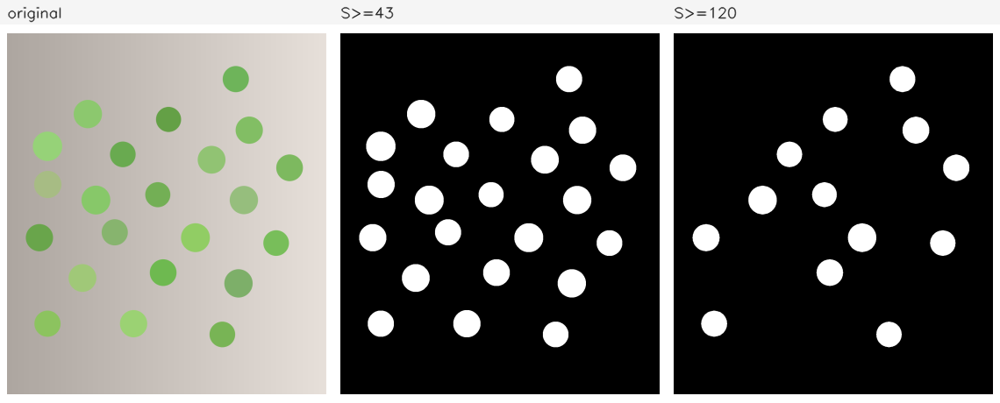
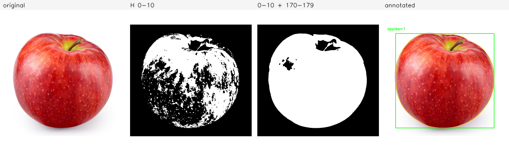
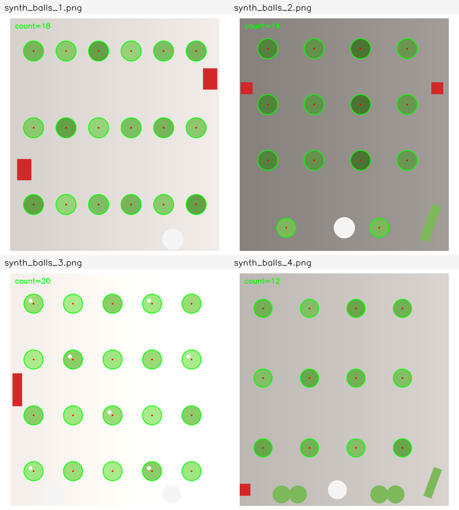
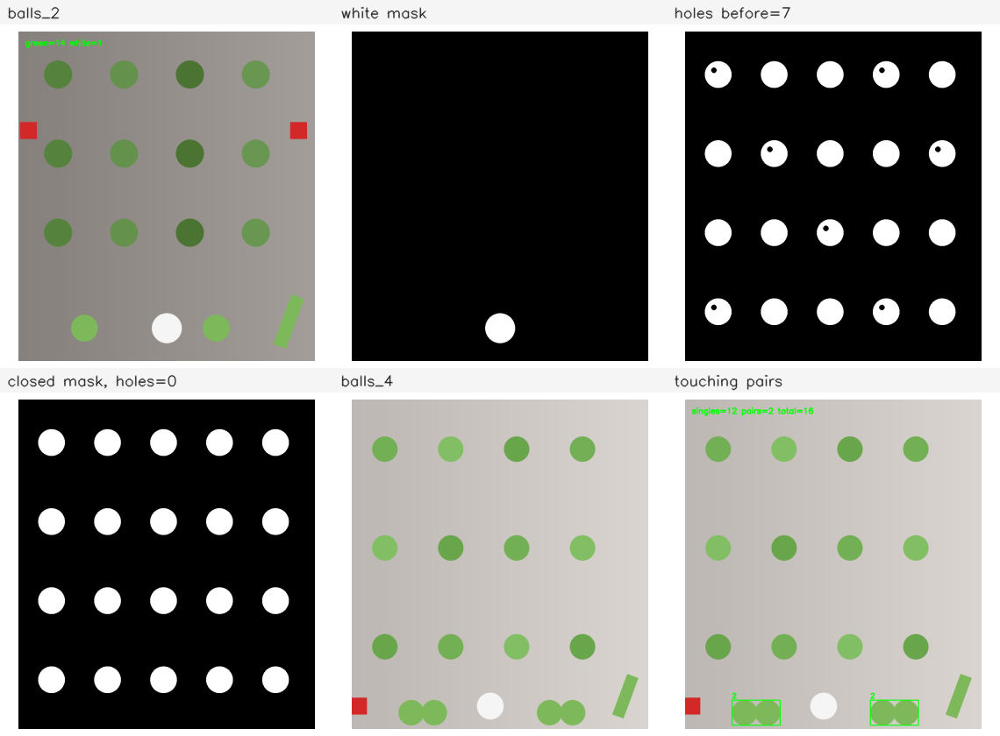
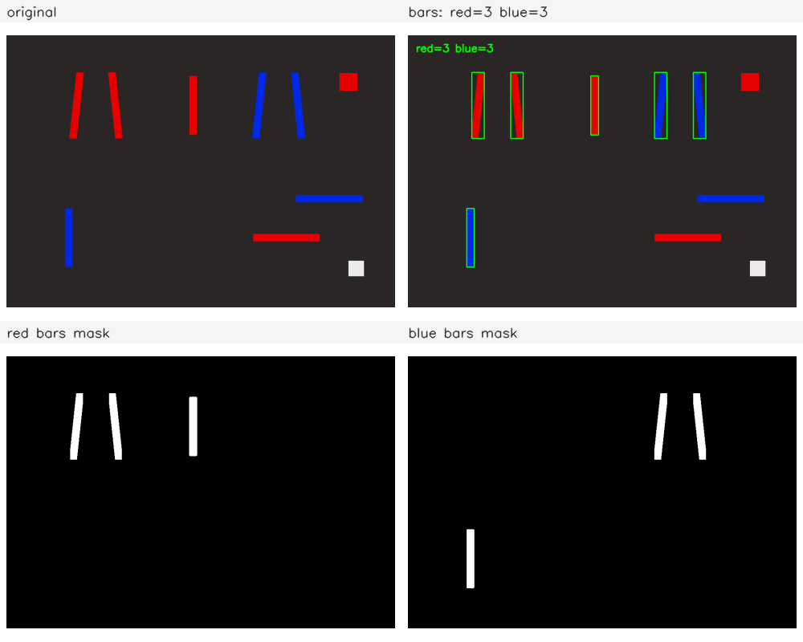
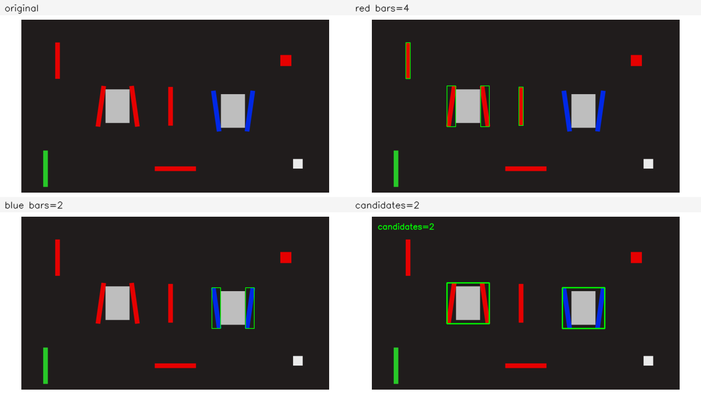

颜色目标检测
这一部分把颜色变成掩码，再从掩码里数出目标：先用 HSV 阈值取色， 用形态学补洞、去噪，按面积、圆形度与宽高比筛选，最后把成对的灯条 组合成装甲板候选。
需要先读 1.4，知道 BGR 三通道与 颜色空间转换；读 1.5，会绘制标注； 读 2.1、 2.2 与 2.3，会做平滑、阈值与开闭运算； 读 3.1、 3.2、 3.3 与 3.4，会提取轮廓并计算面积、 外接矩形、重心与圆形度。本部分默认这些步骤已经会写，只讲颜色检测里 新增的部分。
下面的命令在课程文件夹 lessons/opencv（本页所在目录）下执行。
/tmp 是系统存放临时文件的目录，电脑重启后可能被清空。
如果没有按第 0 部分 0.1 准备过练习目录，或者准备之后重启过电脑，
先执行下面几行，再开始这一部分：
rm -rf /tmp/opencv-course
mkdir -p /tmp/opencv-course
cp -r 示例代码 素材 /tmp/opencv-course/
cd /tmp/opencv-course/示例代码
第一行会删除整个练习副本，路径不要改成自己的目录。复制完成后，
用 pwd 确认当前目录是 /tmp/opencv-course/示例代码。
4.1HSV 阈值与 inRange
颜色检测的第一步，是把感兴趣的颜色从图像里分出来，得到一张二值掩码。 BGR 三个通道与亮度耦合：同一片红色在亮处与暗处的 B、G、R 都会变化， 用一组固定上下界很难同时覆盖。HSV 把色相与明暗分开，色相在光照变化下 更稳定，阈值也就更容易写。
从 BGR 到 HSV
HSV 用三个分量描述颜色。色相（hue，H）表示颜色在色环上的位置；
饱和度（saturation，S）表示颜色偏离灰色的程度；明度（value，V）表示
颜色的亮暗。OpenCV 读入的彩色图是 8 位三通道，转换后仍是
CV_8UC3，三个分量的范围并不是常见的
H 0–360、S/V 0–100%：
| 分量 | 8 位范围 | 含义 |
|---|---|---|
| H | 0–179 | 色相，实际角度除以 2 |
| S | 0–255 | 饱和度，0 为灰色 |
| V | 0–255 | 明度，0 为黑色 |
H 只用一个字节保存，360° 被压缩到 180 个整数，所以 1 对应 2°。 常见颜色的 H 大致如下；具体值随素材、相机与白平衡变化，这张表只用来 估计区间的位置：
| 颜色 | 红 | 橙 | 黄 | 绿 | 青 | 蓝 | 品红 |
|---|---|---|---|---|---|---|---|
| H 近似值 | 0 或 179 | 15 | 30 | 60 | 90 | 120 | 150 |
转换用 cv::cvtColor(image, hsv, cv::COLOR_BGR2HSV)。
输入必须是 8 位三通道；灰度图没有色相，不能这样转换。转换后不能再用
hsv.at<cv::Vec3b>(y, x)[0] 当作蓝色通道，
下标 0、1、2 依次是 H、S、V。
S 为 0 时，H 没有意义，OpenCV 把它写成 0。白色、灰色、黑色的 S 都接近 0， 但它们的 H 可能落在红色区间里。只写 H 区间而不写 S 下限，白色背景就会 被当成红色。V 的下限用来排除深色像素：暗红、阴影里的红，V 很低， 是否保留取决于任务。
inRange 的上下界
cv::inRange(src, lowerb, upperb, dst) 按通道逐个比较，
三个分量都落在闭区间内时输出 255，否则输出 0。输出是
CV_8UC1，可以直接交给 findContours、
形态学函数或 countNonZero。上下界用
cv::Scalar 给出，顺序与图像的通道顺序一致；对 HSV 图就是
H、S、V。
下面是一组常用的绿色范围。H 35–85 覆盖从黄绿到青绿的一段；S 与 V 的 下限取得较低，是为了保留偏灰、偏暗的球：
cv::Mat mask;
cv::inRange(hsv, cv::Scalar(35, 43, 46), cv::Scalar(85, 255, 255), mask);
inRange 不会检查上下界是否写反。下限大于上限时，比较条件
永远不成立，输出是一张全黑的掩码，函数照常返回。这类错误没有报错信息，
只能靠掩码或非零像素数发现。红色跨过 H=0 的问题在下一课处理，那里同样
要先确认区间方向。
S 与 V 的下限决定掩码的宽严。下限低，浅色与暗色目标都能保留，背景里的 杂色也一起进来；下限高，掩码干净，目标边缘与高光附近会缺块。调整时先 固定 H 区间，再分别改 S、V，观察非零像素数与掩码形状，不要三个量一起改。
完整例子：绿色的 S/V 下限
素材 synth_balls.png 是 1187×1343 的合成图，浅灰渐变背景上
分布着 22 个绿球，球的饱和度与亮度各不相同，没有其他颜色。程序用同一组
H 区间，对 S 与 V 的下限取四组值，打印每组的非零像素数；再用两组代表性
阈值生成掩码，拼成三格图保存。
完整程序：
#include <algorithm>
#include <iostream>
#include <string>
#include <opencv2/core.hpp>
#include <opencv2/imgproc.hpp>
#include <opencv2/imgcodecs.hpp>
namespace {
void place(cv::Mat& panel, const cv::Mat& image, int x, int y, int width,
int height, const std::string& label) {
const int label_height = 28;
cv::rectangle(panel, cv::Rect(x, y, width, label_height),
cv::Scalar(245, 245, 245), cv::FILLED);
cv::putText(panel, label, cv::Point(x + 8, y + 20),
cv::FONT_HERSHEY_SIMPLEX, 0.55, cv::Scalar(30, 30, 30), 1,
cv::LINE_AA);
const int inner_width = width - 16;
const int inner_height = height - label_height - 16;
const double scale = std::min(static_cast<double>(inner_width) / image.cols,
static_cast<double>(inner_height) / image.rows);
const int shown_width = std::max(1, cvRound(image.cols * scale));
const int shown_height = std::max(1, cvRound(image.rows * scale));
cv::Mat shown;
cv::resize(image, shown, cv::Size(shown_width, shown_height), 0, 0,
cv::INTER_AREA);
const int left = x + (width - shown_width) / 2;
const int top = y + label_height + (inner_height - shown_height) / 2 + 8;
shown.copyTo(panel(cv::Rect(left, top, shown_width, shown_height)));
}
int greenCount(const cv::Mat& hsv, int s_min, int v_min) {
cv::Mat mask;
cv::inRange(hsv, cv::Scalar(35, s_min, v_min),
cv::Scalar(85, 255, 255), mask);
return cv::countNonZero(mask);
}
} // namespace
int main() {
cv::Mat image = cv::imread("../素材/synth_balls.png", cv::IMREAD_COLOR);
if (image.empty()) {
std::cout << "无法读取素材" << '\n';
return 1;
}
cv::Mat hsv;
cv::cvtColor(image, hsv, cv::COLOR_BGR2HSV);
const int wide = greenCount(hsv, 43, 46);
const int s80 = greenCount(hsv, 80, 46);
const int s120 = greenCount(hsv, 120, 46);
const int v180 = greenCount(hsv, 43, 180);
std::cout << "wide S>=43 V>=46: " << wide << '\n';
std::cout << "S>=80: " << s80 << '\n';
std::cout << "S>=120: " << s120 << '\n';
std::cout << "V>=180: " << v180 << '\n';
cv::Mat mask_wide;
cv::inRange(hsv, cv::Scalar(35, 43, 46), cv::Scalar(85, 255, 255),
mask_wide);
std::vector<std::vector<cv::Point>> contours;
cv::findContours(mask_wide.clone(), contours, cv::RETR_EXTERNAL,
cv::CHAIN_APPROX_SIMPLE);
std::cout << "contours=" << contours.size() << '\n';
cv::Mat mask_strict;
cv::inRange(hsv, cv::Scalar(35, 120, 46), cv::Scalar(85, 255, 255),
mask_strict);
cv::Mat mask_wide_color;
cv::cvtColor(mask_wide, mask_wide_color, cv::COLOR_GRAY2BGR);
cv::Mat mask_strict_color;
cv::cvtColor(mask_strict, mask_strict_color, cv::COLOR_GRAY2BGR);
const int cell_width = 380;
const int cell_height = 460;
cv::Mat panel(cell_height, 3 * cell_width, CV_8UC3,
cv::Scalar(255, 255, 255));
place(panel, image, 0, 0, cell_width, cell_height, "original");
place(panel, mask_wide_color, cell_width, 0, cell_width, cell_height,
"S>=43");
place(panel, mask_strict_color, 2 * cell_width, 0, cell_width, cell_height,
"S>=120");
const bool saved = cv::imwrite("out_hsv_mask.png", panel);
std::cout << "saved out_hsv_mask.png: " << (saved ? "yes" : "no") << '\n';
return 0;
}
在 示例代码 目录下编译并运行：
g++ -std=c++17 -Wall -Wextra 4.1-hsv_range.cpp -o hsv_range \
$(pkg-config --cflags --libs opencv4)
./hsv_rangewide S>=43 V>=46: 176149 S>=80: 166292 S>=120: 97529 V>=180: 138717 contours=22 saved out_hsv_mask.png: yes
wide 一行是 S≥43、V≥46 的结果，掩码有 176149 个非零像素。
把 S 下限从 43 提到 80，只剩 166292；提到 120，降到 97529。S 下限提高
以后，颜色最浅的几个球整颗掉出掩码，像素数下降得很快。V 下限提到 180，
剩下 138717：亮度低于 180 的球被排除，深绿色的球消失。四组数字之间没有
固定的比例关系，它们分别对应不同的取舍。
用宽阈值掩码提取外轮廓，得到 22 条，与图中的球数一致。这个数字才表示 目标个数；前面的 176149 是像素数，会随球的大小变化，不能拿来计数。 白色与浅灰背景的 S 很低，先被 S 下限排除；灰色像素的 H 没有明确含义， 不能单独作为颜色判据。

阈值失败时先看掩码
阈值结果不对时，不要先改轮廓或面积参数。把掩码保存成图片，或者转换成 三通道后与掩码叠加，确认目标在掩码里是否完整。掩码本身缺了一半， 后面的筛选只会放大问题。检查顺序可以固定为三步：先看 H 区间是否覆盖 目标颜色，再看 S/V 下限是否排除背景，最后看形态学是否把目标削掉。
另外两类错误与数值无关。第一，把 BGR 图直接传给 inRange，
却按 H/S/V 写上下界；三个通道的含义对不上，掩码自然没有意义。第二，
把 H 的上限写成 180 或 360。8 位 HSV 的 H 最大是 179，写 180 不会报错，
但比较时没有像素能取到 180，区间尾部会空一截；写 360 时，上界会被
inRange 饱和到 255，相当于取消 H 上限，掩码反而包含 H 较高的像素。
想确认某个像素的颜色，可以把它单独取出来转换。比直接打印 BGR 值更可靠： BGR 的三个数不能直接看出色相，HSV 的 H 才能与区间对照。
题目：构造六个 1×1 的 BGR 像素，分别是纯红 (0,0,255)、橙红 (0,64,255)、品红偏红 (32,0,255)、白 (255,255,255)、粉 (180,180,255) 与灰 (128,128,128)。逐个转成 HSV，打印 H、S、V，并判断它是否落在 红色低区间 H 0–10 或高区间 H 170–179；两个区间都要求 S≥80、V≥60。
完整程序：
#include <iostream>
#include <string>
#include <opencv2/core.hpp>
#include <opencv2/imgproc.hpp>
namespace {
void show(const std::string& name, int blue, int green, int red) {
cv::Mat bgr(1, 1, CV_8UC3, cv::Scalar(blue, green, red));
cv::Mat hsv;
cv::cvtColor(bgr, hsv, cv::COLOR_BGR2HSV);
const cv::Vec3b pixel = hsv.at<cv::Vec3b>(0, 0);
const int h = pixel[0];
const int s = pixel[1];
const int v = pixel[2];
const bool low = h >= 0 && h <= 10 && s >= 80 && v >= 60;
const bool high = h >= 170 && h <= 179 && s >= 80 && v >= 60;
std::cout << name << ": H=" << h << " S=" << s << " V=" << v
<< " low=" << (low ? "yes" : "no")
<< " high=" << (high ? "yes" : "no") << '\n';
}
} // namespace
int main() {
show("red", 0, 0, 255);
show("orange-red", 0, 64, 255);
show("magenta-red", 32, 0, 255);
show("white", 255, 255, 255);
show("pink", 180, 180, 255);
show("gray", 128, 128, 128);
return 0;
}
在 示例代码 目录下编译并运行：
g++ -std=c++17 -Wall -Wextra 4.1-eg-hsv_pixel.cpp -o eg_hsv_pixel \
$(pkg-config --cflags --libs opencv4)
./eg_hsv_pixelred: H=0 S=255 V=255 low=yes high=no orange-red: H=8 S=255 V=255 low=yes high=no magenta-red: H=176 S=255 V=255 low=no high=yes white: H=0 S=0 V=255 low=no high=no pink: H=0 S=75 V=255 low=no high=no gray: H=0 S=0 V=128 low=no high=no
纯红的 H 是 0，落在低区间；橙红 H=8，也在低区间；品红偏红的 H=176， 落在高区间。白色与灰色的 H 都写成 0，如果只比较 H，它们会被误判为 红色；S 分别是 0，低于 80，因此被排除。粉色的 H 是 0、V 是 255， 但 S=75 仍低于下限，同样不进入红色掩码。这个例子说明 S 下限不是 可选项，它负责把接近白色的像素挡在区间外。
创建一个 20×20 的 HSV 图，按四块 10×10 填色：左上 H=5、右上 H=175、
左下 H=60、右下为白色（H=0、S=0、V=255）。用红色低区间
[0,10]、高区间 [170,179] 生成两张掩码，S 下限 80、V 下限 60，
用 bitwise_or 合并。打印低区间、高区间与并集的非零像素数，
再打印并集在白色块与绿色块上的非零像素数。
预期输出：
low=100 high=100 union=200 white_in_union=0 green_in_union=0
看答案
两块红色各占 100 个像素，两个 H 区间互不重叠，所以并集是 200。
白色块的 S=0，绿色块的 H=60 不在红色区间内，两者在并集上都是 0。
并集用 cv::bitwise_or(low, high, mask) 得到；两张掩码
都是 0/255，按位或与逐像素取较大值的结果相同。
#include <iostream>
#include <opencv2/core.hpp>
#include <opencv2/imgproc.hpp>
int main() {
cv::Mat hsv(20, 20, CV_8UC3, cv::Scalar(0, 0, 0));
cv::rectangle(hsv, cv::Rect(0, 0, 10, 10), cv::Scalar(5, 255, 255),
cv::FILLED);
cv::rectangle(hsv, cv::Rect(10, 0, 10, 10), cv::Scalar(175, 255, 255),
cv::FILLED);
cv::rectangle(hsv, cv::Rect(0, 10, 10, 10), cv::Scalar(60, 255, 255),
cv::FILLED);
cv::rectangle(hsv, cv::Rect(10, 10, 10, 10), cv::Scalar(0, 0, 255),
cv::FILLED);
cv::Mat low;
cv::inRange(hsv, cv::Scalar(0, 80, 60), cv::Scalar(10, 255, 255), low);
cv::Mat high;
cv::inRange(hsv, cv::Scalar(170, 80, 60), cv::Scalar(179, 255, 255),
high);
cv::Mat mask;
cv::bitwise_or(low, high, mask);
std::cout << "low=" << cv::countNonZero(low)
<< " high=" << cv::countNonZero(high)
<< " union=" << cv::countNonZero(mask) << '\n';
std::cout << "white_in_union="
<< cv::countNonZero(mask(cv::Rect(10, 10, 10, 10)))
<< " green_in_union="
<< cv::countNonZero(mask(cv::Rect(0, 10, 10, 10))) << '\n';
return 0;
}
low=100 high=100 union=200 white_in_union=0 green_in_union=0
你现在能写什么：用 cvtColor 把 BGR 图转成 HSV；
用 inRange 按 H/S/V 上下界生成掩码；用非零像素数判断阈值
宽严；从掩码里提取外轮廓数出目标个数；解释 S 下限为什么能排除白色背景，
以及上下界写反时掩码为什么是全黑。
4.2红苹果：双区间、形态学与面积
红色在 HSV 的色环上跨过 0 点：一部分红的 H 接近 0，另一部分接近 179。 只写一个区间，掩码会从中间断开。苹果表面又有高光与阴影，掩码内部会出现 孔洞与碎块。本课把双区间、闭运算与面积过滤串成一条完整流程，在一张 苹果照片上数出苹果。
红色跨过 H=0
色环是闭合的，0 与 179 是同一种颜色。红色目标的一部分像素落在 0 附近， 另一部分落在 179 附近，分界取决于相机、光照与白平衡，不能假定所有红 都在同一侧。做法是写两个区间，各自生成掩码，再合并：
cv::Mat low;
cv::inRange(hsv, cv::Scalar(0, 80, 60), cv::Scalar(10, 255, 255), low);
cv::Mat high;
cv::inRange(hsv, cv::Scalar(170, 80, 60), cv::Scalar(179, 255, 255), high);
cv::Mat mask;
cv::bitwise_or(low, high, mask);两个区间都要求 S≥80、V≥60。S 下限排除白色高光与灰色背景，V 下限排除 接近黑色的阴影。区间宽度可以按素材调整：H 0–10 与 170–179 覆盖了大多数 红色，但也会带入少量橙色与品红；收窄到 0–5 与 175–179 更纯，代价是 苹果边缘可能缺块。
苹果照片上，低区间得到 316113 个非零像素，高区间得到 250569 个， 合并后是 566682。前两个数相加正好等于并集，因为两个 H 区间不重叠， 同一像素不会同时落在两边。若两个区间有重叠，这个加法关系就不成立， 应直接看并集的非零像素数。
闭运算与面积过滤
并集掩码已经覆盖了苹果的大部分，但果柄、高光和反光处仍有小孔，边缘也 有零星缺口。闭运算是先膨胀再腐蚀，能把小孔与窄缝填上，同时基本保持 外轮廓的大小。核取 7×7 的椭圆，比高光孔略大，又远小于苹果：
cv::Mat closed;
cv::morphologyEx(mask, closed, cv::MORPH_CLOSE,
cv::getStructuringElement(cv::MORPH_ELLIPSE,
cv::Size(7, 7)));
闭运算之后非零像素从 566682 增加到 568129，多出的 1447 个像素填在
小孔与边缘缺口里。接着用 findContours 提取外轮廓，按面积
过滤。面积下限 1000 像素² 大约相当于 32×32 的方块，能去掉高光碎片与背景
杂点；苹果本身有 586128 像素²，远高于这个下限。
面积阈值与分辨率绑定。同一只苹果在 4K 图里可能有一百多万像素²，缩到 640×480 后只剩几万；把 1000 写死，换一台相机就要重调。可靠的做法是 按目标在图像中的预期尺寸换算：先量出目标的典型边长，再取边长的平方的 一个比例。若图像整体缩放，面积按缩放比例的平方变化。
完整例子：苹果计数
程序读取 apple.jpg，转 HSV，分别生成低区间、高区间与并集
掩码，打印三者的非零像素数；对并集做 7×7 闭运算，提取外轮廓，保留
面积不小于 1000 的轮廓；最后在最大的轮廓上画外接矩形，保存四格对比图。
完整程序：
#include <algorithm>
#include <iostream>
#include <string>
#include <vector>
#include <opencv2/core.hpp>
#include <opencv2/imgproc.hpp>
#include <opencv2/imgcodecs.hpp>
namespace {
void place(cv::Mat& panel, const cv::Mat& image, int x, int y, int width,
int height, const std::string& label) {
const int label_height = 28;
cv::rectangle(panel, cv::Rect(x, y, width, label_height),
cv::Scalar(245, 245, 245), cv::FILLED);
cv::putText(panel, label, cv::Point(x + 8, y + 20),
cv::FONT_HERSHEY_SIMPLEX, 0.55, cv::Scalar(30, 30, 30), 1,
cv::LINE_AA);
const int inner_width = width - 16;
const int inner_height = height - label_height - 16;
const double scale = std::min(static_cast<double>(inner_width) / image.cols,
static_cast<double>(inner_height) / image.rows);
const int shown_width = std::max(1, cvRound(image.cols * scale));
const int shown_height = std::max(1, cvRound(image.rows * scale));
cv::Mat shown;
cv::resize(image, shown, cv::Size(shown_width, shown_height), 0, 0,
cv::INTER_AREA);
const int left = x + (width - shown_width) / 2;
const int top = y + label_height + (inner_height - shown_height) / 2 + 8;
shown.copyTo(panel(cv::Rect(left, top, shown_width, shown_height)));
}
cv::Mat redMask(const cv::Mat& hsv, bool with_high_side) {
cv::Mat low;
cv::inRange(hsv, cv::Scalar(0, 80, 60), cv::Scalar(10, 255, 255), low);
if (!with_high_side) {
return low;
}
cv::Mat high;
cv::inRange(hsv, cv::Scalar(170, 80, 60), cv::Scalar(179, 255, 255),
high);
cv::Mat mask;
cv::bitwise_or(low, high, mask);
return mask;
}
} // namespace
int main() {
cv::Mat image = cv::imread("../素材/apple.jpg", cv::IMREAD_COLOR);
if (image.empty()) {
std::cout << "无法读取素材" << '\n';
return 1;
}
cv::Mat hsv;
cv::cvtColor(image, hsv, cv::COLOR_BGR2HSV);
const cv::Mat low = redMask(hsv, false);
const cv::Mat union_mask = redMask(hsv, true);
std::cout << "red 0-10 nonzero=" << cv::countNonZero(low) << '\n';
cv::Mat high;
cv::inRange(hsv, cv::Scalar(170, 80, 60), cv::Scalar(179, 255, 255),
high);
std::cout << "red 170-179 nonzero=" << cv::countNonZero(high) << '\n';
std::cout << "union nonzero=" << cv::countNonZero(union_mask) << '\n';
cv::Mat closed;
cv::morphologyEx(union_mask, closed, cv::MORPH_CLOSE,
cv::getStructuringElement(cv::MORPH_ELLIPSE,
cv::Size(7, 7)));
std::cout << "closed nonzero=" << cv::countNonZero(closed) << '\n';
std::vector<std::vector<cv::Point>> contours;
cv::findContours(closed.clone(), contours, cv::RETR_EXTERNAL,
cv::CHAIN_APPROX_SIMPLE);
std::vector<std::vector<cv::Point>> kept;
for (const std::vector<cv::Point>& contour : contours) {
if (cv::contourArea(contour) >= 1000.0) {
kept.push_back(contour);
}
}
std::cout << "contours>=1000: " << kept.size() << '\n';
int apples = 0;
int largest_area = 0;
cv::Rect largest_box;
for (const std::vector<cv::Point>& contour : kept) {
const int area = cvRound(cv::contourArea(contour));
if (area > largest_area) {
largest_area = area;
largest_box = cv::boundingRect(contour);
}
++apples;
}
std::cout << "largest area=" << largest_area << '\n';
std::cout << "box=(" << largest_box.x << ", " << largest_box.y << ", "
<< largest_box.width << ", " << largest_box.height << ")\n";
std::cout << "apples=" << apples << '\n';
cv::Mat annotated = image.clone();
for (const std::vector<cv::Point>& contour : kept) {
const cv::Rect box = cv::boundingRect(contour);
cv::rectangle(annotated, box, cv::Scalar(0, 255, 0), 3);
cv::drawContours(annotated, std::vector<std::vector<cv::Point>>{contour},
-1, cv::Scalar(0, 200, 255), 2);
}
cv::putText(annotated, "apples=" + std::to_string(apples),
cv::Point(24, 48), cv::FONT_HERSHEY_SIMPLEX, 1.1,
cv::Scalar(0, 255, 0), 2, cv::LINE_AA);
cv::Mat low_color;
cv::cvtColor(low, low_color, cv::COLOR_GRAY2BGR);
cv::Mat union_color;
cv::cvtColor(closed, union_color, cv::COLOR_GRAY2BGR);
const int cell_width = 360;
const int cell_height = 430;
cv::Mat panel(cell_height, 4 * cell_width, CV_8UC3,
cv::Scalar(255, 255, 255));
place(panel, image, 0, 0, cell_width, cell_height, "original");
place(panel, low_color, cell_width, 0, cell_width, cell_height, "H 0-10");
place(panel, union_color, 2 * cell_width, 0, cell_width, cell_height,
"0-10 + 170-179");
place(panel, annotated, 3 * cell_width, 0, cell_width, cell_height,
"annotated");
const bool saved = cv::imwrite("out_apple.png", panel);
std::cout << "saved out_apple.png: " << (saved ? "yes" : "no") << '\n';
return 0;
}
在 示例代码 目录下编译并运行：
g++ -std=c++17 -Wall -Wextra 4.2-apple.cpp -o apple \
$(pkg-config --cflags --libs opencv4)
./applered 0-10 nonzero=316113 red 170-179 nonzero=250569 union nonzero=566682 closed nonzero=568129 contours>=1000: 1 largest area=586128 box=(97, 79, 870, 840) apples=1 saved out_apple.png: yes
低区间单独使用时，苹果的右半部分与高光附近缺了很多块；高区间补上了 另一侧。并集把两边合起来，闭运算再填掉小孔。面积过滤后只剩一个轮廓， 外接矩形从 (97,79) 开始，宽 870、高 840，覆盖整只苹果。轮廓面积 586128 小于外接矩形面积 870×840=730800，因为苹果是圆的，四个角是背景。

参数表与分辨率
| 参数 | 本例取值 | 作用 | 调整方向 |
|---|---|---|---|
| 红色低区间 H | 0–10 | 覆盖 0 附近的红 | 偏橙时收窄上限 |
| 红色高区间 H | 170–179 | 覆盖 179 附近的红 | 偏品红时收窄下限 |
| S 下限 | 80 | 排除白色与灰色 | 浅色目标多时降低 |
| V 下限 | 60 | 排除深色阴影 | 暗光下降低 |
| 闭运算核 | 7×7 椭圆 | 填小孔与窄缝 | 孔大时增大，目标小时减小 |
| 面积下限 | 1000 | 去掉碎片与杂点 | 按分辨率与目标尺寸换算 |
常见错误有三类。第一，只取一个红色区间，掩码从中间断开，面积过滤后 目标被切成两块。第二，背景里有红色物体，比如红色容器或红色标志， 它们与苹果一起进入掩码；这时要靠位置、形状或面积进一步区分，单靠颜色 不够。第三，面积阈值按某一分辨率写死，换图后要么全部过滤掉，要么把 噪点全留下。
判断参数是否合适，仍然先看掩码：双区间并集应当覆盖目标的大部分， 闭运算后孔洞明显减少，面积过滤后轮廓数等于目标数。任何一个环节不对， 都在那一环停下来调整，不要把问题留给后面的步骤。
题目：创建一个 100×100 的 HSV 图，在 (10,10) 画 20×20 的方块， H=5、S=255、V=255；在 (60,10) 画 6×6 的方块，H=175。把图转成 BGR 再转回 HSV，模拟一次真实读图。分别用 H 0–10 与 170–179 两个区间 生成掩码，合并后打印三者的非零像素数；再提取外轮廓，按面积从大到小 打印，最后统计面积不小于 100 的轮廓数。
完整程序：
#include <algorithm>
#include <iostream>
#include <vector>
#include <opencv2/core.hpp>
#include <opencv2/imgproc.hpp>
int main() {
cv::Mat hsv(100, 100, CV_8UC3, cv::Scalar(0, 0, 0));
cv::rectangle(hsv, cv::Rect(10, 10, 20, 20), cv::Scalar(5, 255, 255),
cv::FILLED);
cv::rectangle(hsv, cv::Rect(60, 10, 6, 6), cv::Scalar(175, 255, 255),
cv::FILLED);
cv::Mat bgr;
cv::cvtColor(hsv, bgr, cv::COLOR_HSV2BGR);
cv::cvtColor(bgr, hsv, cv::COLOR_BGR2HSV);
cv::Mat low;
cv::inRange(hsv, cv::Scalar(0, 80, 60), cv::Scalar(10, 255, 255), low);
cv::Mat high;
cv::inRange(hsv, cv::Scalar(170, 80, 60), cv::Scalar(179, 255, 255),
high);
cv::Mat mask;
cv::bitwise_or(low, high, mask);
std::cout << "low=" << cv::countNonZero(low)
<< " high=" << cv::countNonZero(high)
<< " union=" << cv::countNonZero(mask) << '\n';
std::vector<std::vector<cv::Point>> contours;
cv::findContours(mask.clone(), contours, cv::RETR_EXTERNAL,
cv::CHAIN_APPROX_SIMPLE);
std::vector<int> areas;
for (const std::vector<cv::Point>& contour : contours) {
areas.push_back(cvRound(cv::contourArea(contour)));
}
std::sort(areas.begin(), areas.end(), std::greater<int>());
std::cout << "contours=" << contours.size() << '\n';
for (std::size_t i = 0; i < areas.size(); ++i) {
std::cout << "area[" << i << "]=" << areas[i] << '\n';
}
int kept = 0;
for (int area : areas) {
if (area >= 100) {
++kept;
}
}
std::cout << "kept=" << kept << '\n';
return 0;
}
在 示例代码 目录下编译并运行：
g++ -std=c++17 -Wall -Wextra 4.2-eg-red_union.cpp -o eg_red_union \
$(pkg-config --cflags --libs opencv4)
./eg_red_unionlow=400 high=36 union=436 contours=2 area[0]=361 area[1]=25 kept=1
两个区间各自取到一块方块：低的 20×20 与高的 6×6。填充矩形的轮廓面积 是边长减一后的平方，所以 20×20 得到 19×19=361，6×6 得到 5×5=25。 面积下限 100 只留下大方块。若只写低区间，高区间的小方块会整个消失； 双区间并集才是完整的红色掩码。
创建一个 40×80 的 HSV 图：在 (5,5) 画 24×24 的方块，H=5； 在 (45,5) 画 6×6 的方块，H=175；在 (35,25) 画 20×10 的方块，H=20。 转成 BGR 再转回 HSV。用红色双区间（H 0–10 与 170–179，S≥80、 V≥60）生成并集掩码，打印低区间、高区间与并集的非零像素数； 提取外轮廓，按面积从大到小打印，再统计面积不小于 100 的轮廓数。
预期输出：
low=576 high=36 union=612 contours=2 area[0]=529 area[1]=25 kept=1
看答案
24×24 的方块占 576 个像素，转回 HSV 后仍落在低区间；6×6 的方块 占 36 个像素，落在高区间；H=20 的橙色块不在两个区间内，没有进入 掩码。两个区间不重叠，并集为 612。轮廓面积分别是 23×23=529 与 5×5=25，面积下限 100 只留下大方块。
#include <algorithm>
#include <iostream>
#include <vector>
#include <opencv2/core.hpp>
#include <opencv2/imgproc.hpp>
int main() {
cv::Mat hsv(40, 80, CV_8UC3, cv::Scalar(0, 0, 0));
cv::rectangle(hsv, cv::Rect(5, 5, 24, 24), cv::Scalar(5, 255, 255),
cv::FILLED);
cv::rectangle(hsv, cv::Rect(45, 5, 6, 6), cv::Scalar(175, 255, 255),
cv::FILLED);
cv::rectangle(hsv, cv::Rect(35, 25, 20, 10), cv::Scalar(20, 255, 255),
cv::FILLED);
cv::Mat bgr;
cv::cvtColor(hsv, bgr, cv::COLOR_HSV2BGR);
cv::cvtColor(bgr, hsv, cv::COLOR_BGR2HSV);
cv::Mat low;
cv::inRange(hsv, cv::Scalar(0, 80, 60), cv::Scalar(10, 255, 255), low);
cv::Mat high;
cv::inRange(hsv, cv::Scalar(170, 80, 60), cv::Scalar(179, 255, 255),
high);
cv::Mat mask;
cv::bitwise_or(low, high, mask);
std::vector<std::vector<cv::Point>> contours;
cv::findContours(mask.clone(), contours, cv::RETR_EXTERNAL,
cv::CHAIN_APPROX_SIMPLE);
std::vector<int> areas;
for (const std::vector<cv::Point>& contour : contours) {
areas.push_back(cvRound(cv::contourArea(contour)));
}
std::sort(areas.begin(), areas.end(), std::greater<int>());
std::cout << "low=" << cv::countNonZero(low)
<< " high=" << cv::countNonZero(high)
<< " union=" << cv::countNonZero(mask) << '\n';
std::cout << "contours=" << contours.size() << '\n';
for (std::size_t i = 0; i < areas.size(); ++i) {
std::cout << "area[" << i << "]=" << areas[i] << '\n';
}
int kept = 0;
for (int area : areas) {
if (area >= 100) {
++kept;
}
}
std::cout << "kept=" << kept << '\n';
return 0;
}
low=576 high=36 union=612 contours=2 area[0]=529 area[1]=25 kept=1
你现在能写什么：写出红色双区间并用 bitwise_or 合并；
用闭运算填补掩码中的小孔；按面积过滤轮廓并用外接矩形标出目标；
根据分辨率解释面积阈值为什么要换算；在掩码、轮廓、面积三个环节分别
定位计数错误。
4.3绿球：面积、圆形度与计数
掩码只能说明哪些像素是绿色，不能直接说明有几个球。一个球是一片连通的 前景区域，可以用轮廓描述；球的大小、圆的程度与长宽比例，又能把球与 色块、长条区分开。本课在四张合成图上依次计算面积、圆形度与宽高比， 按阈值筛选后数出绿球。
面积与最小外接圆
cv::contourArea(contour) 按多边形顶点计算面积，单位是像素
的平方。轮廓由边界像素组成，面积是边界围出的多边形面积，不是前景像素
的个数，两者通常相差几十到几百。打印时用 cvRound 取整，
比较时用浮点数。
cv::minEnclosingCircle(contour, center, radius) 求能包住
轮廓的最小圆，输出圆心与半径。它适合标注球状目标：圆心用来画点，
半径用来画圆。最小外接圆的面积 πr² 通常略大于轮廓面积，因为圆要包住
轮廓的所有凸起；拿两者比较可以看出轮廓偏离圆的程度。
以半径 20 的圆为例，理论面积是 π×20²≈1257，轮廓面积约为 1200， 相差约 5%。这个差异来自离散化与轮廓点压缩，不是程序错误。面积阈值要 按这个量级设置，不能按理论值卡得很紧。
圆形度与宽高比
圆形度（circularity）把面积与周长放在一起：
4πA / P²，其中 A 是轮廓面积，P 是轮廓周长。圆形的这个值
接近 1，细长形状接近 0。周长用
cv::arcLength(contour, true) 计算，第二个参数为
true 表示轮廓闭合。
宽高比（aspect ratio）用外接矩形的宽除以高。竖长的目标小于 1，横长的
大于 1；把区间设成 0.75–1.35，可以同时接受略扁与略高的球，拒绝长条。
也可以先把宽高比归一化成 max(width,height)/min(width,height)，
再把区间写成 1–1.35；两种写法覆盖的范围接近，只要前后一致。
这两个特征各有盲区。正方形的圆形度约为 0.79，并不低；一个 40×40 的 方块能通过 0.75 的圆形度下限。宽高比对正方形也是 1，同样拦不住。 圆形度与宽高比只能排除细长与不规则形状，不能单独证明目标是圆。 实际筛选还要结合面积范围、填充率与场景知识。
完整例子：四张图的计数
四张合成图各有不同的干扰。第一张有 18 个绿球、两个红方块、一个白球与 一根绿色长条；第二张有 14 个绿球、一个白球、红方块与绿色长条；第三张 有 20 个带高光的绿球与一根红条；第四张有 12 个独立绿球、两对粘连球、 一个白球与一根绿色长条。程序对每张图做同一套处理：HSV 绿色掩码、 3×3 开运算去掉噪点、5×5 闭运算填小孔、提取外轮廓，再按面积 1500–9000、圆形度不低于 0.75、长宽比 1.0–1.35 筛选，最后用最小外接圆 标注。
完整程序：
#include <algorithm>
#include <cmath>
#include <iostream>
#include <string>
#include <vector>
#include <opencv2/core.hpp>
#include <opencv2/imgproc.hpp>
#include <opencv2/imgcodecs.hpp>
namespace {
const char* const kNames[] = {
"synth_balls_1.png", "synth_balls_2.png",
"synth_balls_3.png", "synth_balls_4.png",
};
struct Ball {
cv::Point2f center;
float radius = 0.0F;
double area = 0.0;
double circularity = 0.0;
};
cv::Mat greenMask(const cv::Mat& image) {
cv::Mat hsv;
cv::cvtColor(image, hsv, cv::COLOR_BGR2HSV);
cv::Mat mask;
cv::inRange(hsv, cv::Scalar(35, 60, 50), cv::Scalar(85, 255, 255),
mask);
cv::morphologyEx(mask, mask, cv::MORPH_OPEN,
cv::getStructuringElement(cv::MORPH_RECT,
cv::Size(3, 3)));
cv::morphologyEx(mask, mask, cv::MORPH_CLOSE,
cv::getStructuringElement(cv::MORPH_RECT,
cv::Size(5, 5)));
return mask;
}
double circularity(const std::vector<cv::Point>& contour) {
const double area = cv::contourArea(contour);
const double perimeter = cv::arcLength(contour, true);
if (perimeter <= 0.0) {
return 0.0;
}
return 4.0 * CV_PI * area / (perimeter * perimeter);
}
std::vector<Ball> findBalls(const cv::Mat& mask) {
std::vector<std::vector<cv::Point>> contours;
cv::findContours(mask.clone(), contours, cv::RETR_EXTERNAL,
cv::CHAIN_APPROX_SIMPLE);
std::vector<Ball> balls;
for (const std::vector<cv::Point>& contour : contours) {
const double area = cv::contourArea(contour);
const double circ = circularity(contour);
const cv::Rect box = cv::boundingRect(contour);
const double aspect = static_cast<double>(box.width) / box.height;
if (area < 1500.0 || area > 9000.0 || circ < 0.75 ||
aspect < 0.75 || aspect > 1.35) {
continue;
}
Ball ball;
cv::minEnclosingCircle(contour, ball.center, ball.radius);
ball.area = area;
ball.circularity = circ;
balls.push_back(ball);
}
return balls;
}
void place(cv::Mat& panel, const cv::Mat& image, int x, int y, int width,
int height, const std::string& label) {
const int label_height = 28;
cv::rectangle(panel, cv::Rect(x, y, width, label_height),
cv::Scalar(245, 245, 245), cv::FILLED);
cv::putText(panel, label, cv::Point(x + 8, y + 20),
cv::FONT_HERSHEY_SIMPLEX, 0.55, cv::Scalar(30, 30, 30), 1,
cv::LINE_AA);
const int inner_width = width - 16;
const int inner_height = height - label_height - 16;
const double scale = std::min(static_cast<double>(inner_width) / image.cols,
static_cast<double>(inner_height) / image.rows);
const int shown_width = std::max(1, cvRound(image.cols * scale));
const int shown_height = std::max(1, cvRound(image.rows * scale));
cv::Mat shown;
cv::resize(image, shown, cv::Size(shown_width, shown_height), 0, 0,
cv::INTER_AREA);
const int left = x + (width - shown_width) / 2;
const int top = y + label_height + (inner_height - shown_height) / 2 + 8;
shown.copyTo(panel(cv::Rect(left, top, shown_width, shown_height)));
}
} // namespace
int main() {
const int cell_width = 450;
const int cell_height = 500;
cv::Mat panel(2 * cell_height, 2 * cell_width, CV_8UC3,
cv::Scalar(255, 255, 255));
int total = 0;
for (int i = 0; i < 4; ++i) {
const std::string path = std::string("../素材/") + kNames[i];
cv::Mat image = cv::imread(path, cv::IMREAD_COLOR);
if (image.empty()) {
std::cout << "无法读取 " << kNames[i] << '\n';
return 1;
}
const cv::Mat mask = greenMask(image);
const std::vector<Ball> balls = findBalls(mask);
total += static_cast<int>(balls.size());
std::cout << kNames[i] << ": accepted=" << balls.size() << '\n';
cv::Mat annotated = image.clone();
for (const Ball& ball : balls) {
cv::circle(annotated, ball.center, cvRound(ball.radius),
cv::Scalar(0, 255, 0), 2, cv::LINE_AA);
cv::circle(annotated, ball.center, 3, cv::Scalar(0, 0, 255),
cv::FILLED, cv::LINE_AA);
}
cv::putText(annotated, "count=" + std::to_string(balls.size()),
cv::Point(20, 42), cv::FONT_HERSHEY_SIMPLEX, 1.0,
cv::Scalar(0, 255, 0), 2, cv::LINE_AA);
const int x = (i % 2) * cell_width;
const int y = (i / 2) * cell_height;
place(panel, annotated, x, y, cell_width, cell_height, kNames[i]);
}
std::cout << "total=" << total << '\n';
const bool saved = cv::imwrite("out_green_count.png", panel);
std::cout << "saved out_green_count.png: " << (saved ? "yes" : "no")
<< '\n';
return 0;
}
在 示例代码 目录下编译并运行：
g++ -std=c++17 -Wall -Wextra 4.3-green_balls.cpp -o green_balls \
$(pkg-config --cflags --libs opencv4)
./green_ballssynth_balls_1.png: accepted=18 synth_balls_2.png: accepted=14 synth_balls_3.png: accepted=20 synth_balls_4.png: accepted=12 total=64 saved out_green_count.png: yes
前三张的计数与绿球数一致。白球不在绿色区间内，红方块与红条不在绿色 区间内，绿色长条虽然进入了掩码，但长宽比远大于 1.35，被筛掉。 第三张的高光在掩码里形成孔洞，5×5 闭运算把大部分孔洞填上，轮廓仍保持 圆形。第四张只数出 12 个独立球：两对粘连球各自连成一个大轮廓，面积超过 9000 或者圆形度低于 0.75，没有进入计数。粘连的处理放在下一课。
这张结果图同时暴露了阈值的边界：第四张的 12 不是球的总数，而是符合 “独立、圆形、尺寸在范围内”的球数。计数任务要先明确数什么，再决定 粘连算一个还是两个。参数表里的每一个条件都会改变这个口径。

synth_balls_1 到 synth_balls_4。
绿色圆与红点是保留下来的球；白球、红方块、绿色长条与粘连球没有被
标注。左上角是这张图的计数。
参数表与取舍
| 参数 | 本例取值 | 作用 | 调整方向 |
|---|---|---|---|
| 绿色 H 区间 | 35–85 | 覆盖绿色 | 偏黄的绿降低下限，偏青的绿提高上限 |
| S 下限 | 60 | 排除浅灰与白色 | 浅色球多时降低 |
| V 下限 | 50 | 排除深色背景 | 暗光下降低 |
| 开运算核 | 3×3 矩形 | 去掉零星噪点 | 噪点多时增大 |
| 闭运算核 | 5×5 矩形 | 填高光小孔 | 孔大时增大，球距小时减小 |
| 面积范围 | 1500–9000 | 限定球的尺寸 | 按分辨率与球半径换算 |
| 圆形度下限 | 0.75 | 排除长条与不规则形状 | 球被遮挡时降低 |
| 长宽比 | 1.0–1.35 | 排除横竖长条 | 目标扁时放宽 |
参数之间会互相影响。闭运算核增大，孔洞填得更干净，但相邻的球可能连成 一片，圆形度与面积同时变化；面积上限降低，粘连球会被排除，独立的大球 也可能被误删。调参时一次只动一个量，并同时看计数与标注图，不能只看 数字。
题目：创建一个 200×100 的掩码，左边画半径 30 的实心圆，右边画 60×60 的实心方块。提取外轮廓，对每个轮廓打印面积、周长、圆形度与 宽高比，按外接矩形的 x 坐标区分圆与方块。
完整程序：
#include <iostream>
#include <string>
#include <vector>
#include <opencv2/core.hpp>
#include <opencv2/imgproc.hpp>
namespace {
void report(const std::string& name, const std::vector<cv::Point>& contour) {
const double area = cv::contourArea(contour);
const double perimeter = cv::arcLength(contour, true);
const double circularity = 4.0 * CV_PI * area / (perimeter * perimeter);
const cv::Rect box = cv::boundingRect(contour);
const double aspect = static_cast<double>(box.width) / box.height;
std::cout << name << ": area=" << cvRound(area)
<< " perimeter=" << cvRound(perimeter)
<< " circularity=" << cvRound(circularity * 100.0) / 100.0
<< " aspect=" << cvRound(aspect * 100.0) / 100.0 << '\n';
}
} // namespace
int main() {
cv::Mat mask = cv::Mat::zeros(100, 200, CV_8UC1);
cv::circle(mask, cv::Point(50, 50), 30, cv::Scalar(255), cv::FILLED);
cv::rectangle(mask, cv::Rect(120, 20, 60, 60), cv::Scalar(255),
cv::FILLED);
std::vector<std::vector<cv::Point>> contours;
cv::findContours(mask.clone(), contours, cv::RETR_EXTERNAL,
cv::CHAIN_APPROX_SIMPLE);
for (const std::vector<cv::Point>& contour : contours) {
const cv::Rect box = cv::boundingRect(contour);
if (box.x < 100) {
report("circle", contour);
} else {
report("square", contour);
}
}
return 0;
}
在 示例代码 目录下编译并运行：
g++ -std=c++17 -Wall -Wextra 4.3-eg-circularity.cpp -o eg_circularity \
$(pkg-config --cflags --libs opencv4)
./eg_circularitysquare: area=3481 perimeter=236 circularity=0.79 aspect=1 circle: area=2736 perimeter=198 circularity=0.88 aspect=1
正方形的圆形度是 0.79，圆是 0.88，差距没有想象中大；两者的宽高比都是 1。 如果只把圆形度下限设成 0.75，方块会通过。圆的圆形度不到 1，是因为 轮廓周长按像素边界累加，离散边界的周长比理想圆周略长。这个例子说明 单个特征不足以判断形状，阈值要结合任务与场景一起定。
创建一个 180×60 的掩码：在 (30,30) 画半径 20 的实心圆；在 (70,10) 画 60×30 的实心矩形；在 (150,5) 画 6×55 的实心长条。 提取外轮廓，按外接矩形的 x 坐标排序，对每个轮廓打印名称、面积、 圆形度、长宽比，以及是否通过筛选。筛选条件是面积 500–3500、 圆形度不低于 0.80、长宽比（长边除以短边）在 1.0–1.35 之间。
预期输出：
circle area=1200 circ=0.87 aspect=1 ok=yes rect area=1711 circ=0.69 aspect=2 ok=no bar area=270 circ=0.24 aspect=9.17 ok=no
看答案
圆的面积 1200、圆形度 0.87，长宽比 1，三项都在范围内。60×30 的 矩形圆形度只有 0.69，长宽比 2，被圆形度与长宽比同时排除；6×55 的 长条面积为 270，低于下限，圆形度 0.24、长宽比 9.17，也不合格。 注意长宽比统一用长边除以短边，长条与横条都会得到大于 1 的数， 不需要为方向分别写区间。
#include <algorithm>
#include <iostream>
#include <string>
#include <vector>
#include <opencv2/core.hpp>
#include <opencv2/imgproc.hpp>
namespace {
void report(const std::string& name, const std::vector<cv::Point>& contour) {
const double area = cv::contourArea(contour);
const double perimeter = cv::arcLength(contour, true);
const double circularity = 4.0 * CV_PI * area / (perimeter * perimeter);
const cv::Rect box = cv::boundingRect(contour);
const double aspect = static_cast<double>(std::max(box.width, box.height)) /
std::min(box.width, box.height);
const bool ok = area >= 500.0 && area <= 3500.0 &&
circularity >= 0.80 && aspect >= 1.0 && aspect <= 1.35;
std::cout << name << " area=" << cvRound(area)
<< " circ=" << cvRound(circularity * 100.0) / 100.0
<< " aspect=" << cvRound(aspect * 100.0) / 100.0
<< " ok=" << (ok ? "yes" : "no") << '\n';
}
} // namespace
int main() {
cv::Mat mask = cv::Mat::zeros(60, 180, CV_8UC1);
cv::circle(mask, cv::Point(30, 30), 20, cv::Scalar(255), cv::FILLED);
cv::rectangle(mask, cv::Rect(70, 10, 60, 30), cv::Scalar(255),
cv::FILLED);
cv::rectangle(mask, cv::Rect(150, 5, 6, 55), cv::Scalar(255),
cv::FILLED);
std::vector<std::vector<cv::Point>> contours;
cv::findContours(mask.clone(), contours, cv::RETR_EXTERNAL,
cv::CHAIN_APPROX_SIMPLE);
std::sort(contours.begin(), contours.end(),
[](const std::vector<cv::Point>& a,
const std::vector<cv::Point>& b) {
return cv::boundingRect(a).x < cv::boundingRect(b).x;
});
for (const std::vector<cv::Point>& contour : contours) {
const cv::Rect box = cv::boundingRect(contour);
if (box.x < 60) {
report("circle", contour);
} else if (box.x < 140) {
report("rect", contour);
} else {
report("bar", contour);
}
}
return 0;
}
circle area=1200 circ=0.87 aspect=1 ok=yes rect area=1711 circ=0.69 aspect=2 ok=no bar area=270 circ=0.24 aspect=9.17 ok=no
你现在能写什么：用 contourArea 与
arcLength 计算面积和周长；用 4πA/P² 计算
圆形度；用 minEnclosingCircle 标注球状目标；组合面积、
圆形度与宽高比筛选轮廓，并解释每个阈值放过了什么、挡住了什么。
4.4粘连、白球与干扰
上一课的计数规则建立在“一个球对应一个轮廓”上。真实场景里，这个前提 经常不成立：两个球挨在一起会连成一个轮廓，白色球没有绿色，高光会在 掩码里留下孔洞。本课分别处理这三种情况，并给出计数口径。
粘连：面积异常与腐蚀分离
两个球接触时，掩码连成一片，findContours 只返回一个外轮廓。
这个轮廓的面积接近两个球之和，外接矩形变长，长宽比增大，圆形度下降。
若场景里的球大小相近，可以先从明显是单球的轮廓求中位面积，再把面积
超过中位面积一定倍数、且长宽比明显大于 1 的轮廓判为粘连：
if (area > 1.5 * median_area && aspect >= 1.5) {
const int inside = std::max(2, cvRound(area / median_area));
}
中位面积从圆形度不低于 0.75 的轮廓里取，避免粘连轮廓把基准拉高。
area / median_area 四舍五入得到这个轮廓里大约有几个球；
std::max(2, ...) 保证判为粘连时至少算两个。第四张图里，
12 个独立球加两对粘连球，两对的面积都约为单球的两倍，得到
12+2×2=16。
这个估计依赖三个前提：球的大小相近、粘连处没有把轮廓撑得太大、单球 样本足够多。球大小差异大时，按面积估计会失真，需要先按半径分组， 或者改用几何方法分离。腐蚀可以把细颈削断：对掩码做几次腐蚀，粘连处 先断开，再用轮廓数计数；腐蚀同时会让球变小，计数后要把半径补回来。 距离变换与分水岭能得到更稳定的分离结果，做法比腐蚀复杂，适合粘连严重 且球大小已知的场景。
白球与高光
白球的 S 很低、V 很高，不在绿色区间内，绿色掩码里完全没有它。要单独 数白球，需要另写一组白色范围：H 取全范围 0–179，S 上限 45，V 下限 215。H 在全范围内取值，是因为白色的色相没有意义，OpenCV 统一写成 0； 如果不放开 H，某些偏暖的白会被漏掉。
cv::Mat white;
cv::inRange(hsv, cv::Scalar(0, 0, 215), cv::Scalar(179, 45, 255), white);白色掩码会把浅色背景、白墙、灯光一起选进来。程序用面积 2500–10000、圆形度不低于 0.75，并要求外接矩形不贴图像边界，去掉背景 与边缘的大块区域。第二张图里，绿色球 14 个，白球 1 个；白球在白色掩码 中是独立圆形，背景的灰度低于 V 下限，没有进入掩码。
绿色球上的高光是另一种情况：高光像素的 S 低、V 高，不在绿色区间内，
于是在绿色掩码里形成孔洞。孔洞不影响外轮廓计数，但会让面积偏小；
孔洞靠近边缘时还会把轮廓切出缺口，圆形度下降。用
RETR_TREE 统计 parent 不为 -1 的轮廓，就能数出孔洞数。
第三张图开运算后有 7 个孔洞，用 13×13 的闭运算填平后为 0，绿球仍是
20 个。
闭运算核要大于高光孔、小于相邻球之间的空隙。核太大，两个球会连成 一片，计数反而减少；核太小，孔洞填不上。调整时同时看孔洞数与球数， 两个数字都稳定，核才算合适。
完整例子：三种情况
程序分三段。第一段处理第二张图：绿色掩码加 5×5 闭运算，按上一课的 条件数绿球；另取白色掩码数白球。第二段处理第三张图：先数绿色掩码的 孔洞，再做 13×13 闭运算，重新数孔洞与绿球。第三段处理第四张图： 先求单球的中位面积，再按面积倍数与长宽比识别粘连轮廓，累计球数。 六格结果图依次显示原图、白色掩码、闭运算前后的掩码与粘连标注。
完整程序：
#include <algorithm>
#include <cmath>
#include <iostream>
#include <string>
#include <vector>
#include <opencv2/core.hpp>
#include <opencv2/imgproc.hpp>
#include <opencv2/imgcodecs.hpp>
namespace {
void place(cv::Mat& panel, const cv::Mat& image, int x, int y, int width,
int height, const std::string& label) {
const int label_height = 28;
cv::rectangle(panel, cv::Rect(x, y, width, label_height),
cv::Scalar(245, 245, 245), cv::FILLED);
cv::putText(panel, label, cv::Point(x + 8, y + 20),
cv::FONT_HERSHEY_SIMPLEX, 0.55, cv::Scalar(30, 30, 30), 1,
cv::LINE_AA);
const int inner_width = width - 16;
const int inner_height = height - label_height - 16;
const double scale = std::min(static_cast<double>(inner_width) / image.cols,
static_cast<double>(inner_height) / image.rows);
const int shown_width = std::max(1, cvRound(image.cols * scale));
const int shown_height = std::max(1, cvRound(image.rows * scale));
cv::Mat shown;
cv::resize(image, shown, cv::Size(shown_width, shown_height), 0, 0,
cv::INTER_AREA);
const int left = x + (width - shown_width) / 2;
const int top = y + label_height + (inner_height - shown_height) / 2 + 8;
shown.copyTo(panel(cv::Rect(left, top, shown_width, shown_height)));
}
double circularity(const std::vector<cv::Point>& contour) {
const double area = cv::contourArea(contour);
const double perimeter = cv::arcLength(contour, true);
if (perimeter <= 0.0) {
return 0.0;
}
return 4.0 * CV_PI * area / (perimeter * perimeter);
}
cv::Mat greenMask(const cv::Mat& image) {
cv::Mat hsv;
cv::cvtColor(image, hsv, cv::COLOR_BGR2HSV);
cv::Mat mask;
cv::inRange(hsv, cv::Scalar(35, 60, 50), cv::Scalar(85, 255, 255),
mask);
cv::morphologyEx(mask, mask, cv::MORPH_OPEN,
cv::getStructuringElement(cv::MORPH_RECT,
cv::Size(3, 3)));
return mask;
}
int countNested(const cv::Mat& mask) {
std::vector<std::vector<cv::Point>> contours;
std::vector<cv::Vec4i> hierarchy;
cv::findContours(mask.clone(), contours, hierarchy, cv::RETR_TREE,
cv::CHAIN_APPROX_SIMPLE);
int nested = 0;
for (const cv::Vec4i& item : hierarchy) {
if (item[3] >= 0) {
++nested;
}
}
return nested;
}
int countSingleBalls(const cv::Mat& mask) {
std::vector<std::vector<cv::Point>> contours;
cv::findContours(mask.clone(), contours, cv::RETR_EXTERNAL,
cv::CHAIN_APPROX_SIMPLE);
int count = 0;
for (const std::vector<cv::Point>& contour : contours) {
const double area = cv::contourArea(contour);
const cv::Rect box = cv::boundingRect(contour);
const double aspect = static_cast<double>(
std::max(box.width, box.height)) / std::min(box.width, box.height);
if (area >= 1500.0 && area <= 9000.0 && circularity(contour) >= 0.75 &&
aspect >= 1.0 && aspect <= 1.35) {
++count;
}
}
return count;
}
} // namespace
int main() {
const int cell_width = 380;
const int cell_height = 420;
cv::Mat panel(2 * cell_height, 3 * cell_width, CV_8UC3,
cv::Scalar(255, 255, 255));
// 白球：低 S、高 V；背景不是白色时才可用颜色单独分开。
cv::Mat image2 = cv::imread("../素材/synth_balls_2.png", cv::IMREAD_COLOR);
if (image2.empty()) {
std::cout << "无法读取 synth_balls_2.png" << '\n';
return 1;
}
const cv::Mat green2 = greenMask(image2);
cv::Mat closed2;
cv::morphologyEx(green2, closed2, cv::MORPH_CLOSE,
cv::getStructuringElement(cv::MORPH_RECT,
cv::Size(5, 5)));
const int green_count2 = countSingleBalls(closed2);
cv::Mat hsv2;
cv::cvtColor(image2, hsv2, cv::COLOR_BGR2HSV);
cv::Mat white;
cv::inRange(hsv2, cv::Scalar(0, 0, 215), cv::Scalar(179, 45, 255),
white);
std::vector<std::vector<cv::Point>> white_contours;
cv::findContours(white.clone(), white_contours, cv::RETR_EXTERNAL,
cv::CHAIN_APPROX_SIMPLE);
int white_balls = 0;
for (const std::vector<cv::Point>& contour : white_contours) {
const double area = cv::contourArea(contour);
const cv::Rect box = cv::boundingRect(contour);
if (area >= 2500.0 && area <= 10000.0 &&
circularity(contour) >= 0.75 && box.x > 1 && box.y > 1 &&
box.br().x < white.cols - 1 && box.br().y < white.rows - 1) {
++white_balls;
}
}
std::cout << "synth_balls_2: green=" << green_count2
<< " white=" << white_balls << '\n';
cv::Mat white_color;
cv::cvtColor(white, white_color, cv::COLOR_GRAY2BGR);
cv::Mat annotated2 = image2.clone();
cv::putText(annotated2, "green=" + std::to_string(green_count2) +
" white=" + std::to_string(white_balls),
cv::Point(20, 42), cv::FONT_HERSHEY_SIMPLEX, 0.8,
cv::Scalar(0, 255, 0), 2, cv::LINE_AA);
place(panel, annotated2, 0, 0, cell_width, cell_height, "balls_2");
place(panel, white_color, cell_width, 0, cell_width, cell_height,
"white mask");
// 高光：先数孔洞，再用 13×13 闭运算填平。
cv::Mat image3 = cv::imread("../素材/synth_balls_3.png", cv::IMREAD_COLOR);
if (image3.empty()) {
std::cout << "无法读取 synth_balls_3.png" << '\n';
return 1;
}
const cv::Mat open3 = greenMask(image3);
const int holes_before = countNested(open3);
cv::Mat closed3;
cv::morphologyEx(open3, closed3, cv::MORPH_CLOSE,
cv::getStructuringElement(cv::MORPH_RECT,
cv::Size(13, 13)));
const int holes_after = countNested(closed3);
const int green_count3 = countSingleBalls(closed3);
std::cout << "synth_balls_3: holes before=" << holes_before
<< " after=" << holes_after << " green=" << green_count3
<< '\n';
cv::Mat open3_color;
cv::cvtColor(open3, open3_color, cv::COLOR_GRAY2BGR);
cv::Mat closed3_color;
cv::cvtColor(closed3, closed3_color, cv::COLOR_GRAY2BGR);
place(panel, open3_color, 2 * cell_width, 0, cell_width, cell_height,
"holes before=7");
place(panel, closed3_color, 0, cell_height, cell_width, cell_height,
"closed mask, holes=0");
// 粘连：面积约为单球的整数倍，按中位面积估计个数。
cv::Mat image4 = cv::imread("../素材/synth_balls_4.png", cv::IMREAD_COLOR);
if (image4.empty()) {
std::cout << "无法读取 synth_balls_4.png" << '\n';
return 1;
}
const cv::Mat open4 = greenMask(image4);
cv::Mat closed4;
cv::morphologyEx(open4, closed4, cv::MORPH_CLOSE,
cv::getStructuringElement(cv::MORPH_RECT,
cv::Size(5, 5)));
std::vector<std::vector<cv::Point>> contours4;
cv::findContours(closed4.clone(), contours4, cv::RETR_EXTERNAL,
cv::CHAIN_APPROX_SIMPLE);
std::vector<double> single_areas;
for (const std::vector<cv::Point>& contour : contours4) {
if (circularity(contour) >= 0.75) {
single_areas.push_back(cv::contourArea(contour));
}
}
std::sort(single_areas.begin(), single_areas.end());
double median_area = 0.0;
if (!single_areas.empty()) {
median_area = single_areas[single_areas.size() / 2];
}
if (median_area <= 0.0) {
std::cout << "没有可用的单球轮廓" << '\n';
return 1;
}
int singles = 0;
int pairs = 0;
int green_total = 0;
cv::Mat annotated4 = image4.clone();
for (const std::vector<cv::Point>& contour : contours4) {
const double area = cv::contourArea(contour);
const cv::Rect box = cv::boundingRect(contour);
const double aspect = static_cast<double>(
std::max(box.width, box.height)) / std::min(box.width, box.height);
if (area > 1.5 * median_area && aspect >= 1.5) {
const int inside = std::max(2, cvRound(area / median_area));
pairs += 1;
green_total += inside;
cv::rectangle(annotated4, box, cv::Scalar(0, 255, 0), 2);
cv::putText(annotated4, std::to_string(inside),
cv::Point(box.x, box.y - 6),
cv::FONT_HERSHEY_SIMPLEX, 0.7,
cv::Scalar(0, 255, 0), 2, cv::LINE_AA);
} else if (area >= 1500.0 && area <= 9000.0 &&
circularity(contour) >= 0.75 && aspect <= 1.35) {
++singles;
green_total += 1;
}
}
std::cout << "synth_balls_4: singles=" << singles << " pairs=" << pairs
<< " green_total=" << green_total << '\n';
cv::putText(annotated4, "singles=" + std::to_string(singles) +
" pairs=" + std::to_string(pairs) +
" total=" + std::to_string(green_total),
cv::Point(20, 42), cv::FONT_HERSHEY_SIMPLEX, 0.8,
cv::Scalar(0, 255, 0), 2, cv::LINE_AA);
place(panel, image4, cell_width, cell_height, cell_width, cell_height,
"balls_4");
place(panel, annotated4, 2 * cell_width, cell_height, cell_width,
cell_height, "touching pairs");
const bool saved = cv::imwrite("out_occlusion.png", panel);
std::cout << "saved out_occlusion.png: " << (saved ? "yes" : "no")
<< '\n';
return 0;
}
在 示例代码 目录下编译并运行：
g++ -std=c++17 -Wall -Wextra 4.4-occlusion.cpp -o occlusion \
$(pkg-config --cflags --libs opencv4)
./occlusionsynth_balls_2: green=14 white=1 synth_balls_3: holes before=7 after=0 green=20 synth_balls_4: singles=12 pairs=2 green_total=16 saved out_occlusion.png: yes
第二张图的绿球 14 个、白球 1 个，与图一致；白球没有被算进绿球，也没 有被漏掉。第三张图开运算后有 7 个孔洞，闭运算后为 0，绿球 20 个， 说明填孔没有把相邻球连在一起。第四张图 12 个独立球、2 对粘连球， 按面积估计总数为 16；这个 16 是估计值，不是轮廓数，轮廓数仍是 14。

处理顺序与参数
| 情况 | 判据 | 本例参数 | 风险 |
|---|---|---|---|
| 粘连 | 面积大于中位数的倍数，长宽比变大 | 1.5 倍，长宽比≥1.5 | 球大小差异大时估错个数 |
| 白球 | S 低、V 高 | S≤45，V≥215 | 浅色背景被计入 |
| 高光孔洞 | 树状轮廓中 parent 不为 -1 | 13×13 闭运算 | 核过大把相邻球连起来 |
| 边缘背景 | 外接矩形贴边 | 四边各留 1 像素 | 贴边的真实目标被排除 |
处理顺序会影响结果。先做小核开运算去噪，再数孔洞，最后用较大的核闭 运算填孔；如果先做大核闭运算，孔洞数会被低估，粘连也会提前发生。 白色与绿色分别统计，最后相加；若白球与绿球可能重叠，还要检查两个掩码 的交集，避免同一目标被统计两次。
常见错误有三种。第一，把粘连轮廓直接丢掉，计数偏少，却没有在结果里 说明口径。第二，白色范围没有限制贴边，背景被当成白球。第三，中位 面积把粘连轮廓也算进去，基准被拉高，真正的粘连反而识别不出来。每一种 错误都能在中间掩码或轮廓表里找到对应的数字，不要只看最后的计数。
题目：创建一个 50×100 的掩码，画两个半径 15 的实心圆，圆心分别在 (35,25) 与 (60,25)，两圆重叠。先数外轮廓；再用 5×5 椭圆核腐蚀 5 次，重新数外轮廓并打印每条的 area。
完整程序：
#include <iostream>
#include <vector>
#include <opencv2/core.hpp>
#include <opencv2/imgproc.hpp>
int main() {
cv::Mat mask = cv::Mat::zeros(50, 100, CV_8UC1);
cv::circle(mask, cv::Point(35, 25), 15, cv::Scalar(255), cv::FILLED);
cv::circle(mask, cv::Point(60, 25), 15, cv::Scalar(255), cv::FILLED);
std::vector<std::vector<cv::Point>> before;
cv::findContours(mask.clone(), before, cv::RETR_EXTERNAL,
cv::CHAIN_APPROX_SIMPLE);
std::cout << "before=" << before.size() << '\n';
cv::Mat eroded;
cv::erode(mask, eroded, cv::getStructuringElement(cv::MORPH_ELLIPSE,
cv::Size(5, 5)),
cv::Point(-1, -1), 5);
std::vector<std::vector<cv::Point>> after;
cv::findContours(eroded.clone(), after, cv::RETR_EXTERNAL,
cv::CHAIN_APPROX_SIMPLE);
std::cout << "after=" << after.size() << '\n';
for (std::size_t i = 0; i < after.size(); ++i) {
std::cout << "area[" << i << "]="
<< cvRound(cv::contourArea(after[i])) << '\n';
}
return 0;
}
在 示例代码 目录下编译并运行：
g++ -std=c++17 -Wall -Wextra 4.4-eg-erode_split.cpp -o eg_erode_split \
$(pkg-config --cflags --libs opencv4)
./eg_erode_splitbefore=1 after=2 area[0]=76 area[1]=76
两圆重叠 5 个像素，外轮廓只有一条。腐蚀 5 次后，每个圆的半径减少约 10 个像素，连接处被削断，外轮廓变成两条，每条面积 76。腐蚀次数不能 无限增加：次数再多，球会缩成小点甚至消失。实际使用时要先量出球半径 与连接处宽度，再决定核大小与次数。
创建一个 50×50 的掩码，在 (25,25) 画半径 15 的实心圆，在
(22,22) 挖一个 6×6 的黑色方块，模拟高光孔洞。用
RETR_TREE 统计 parent 不为 -1 的轮廓数；再用 11×11
椭圆核做闭运算，重新统计孔洞数，并用 RETR_EXTERNAL
数外轮廓。打印闭运算前后的孔洞数与外轮廓数。
预期输出：
holes before=1 after=0 objects=1
看答案
6×6 的黑方块在圆内部形成一个孔洞，树状轮廓中它的父轮廓不是 -1， 孔洞数为 1；11×11 的闭运算核大于孔洞，填平以后孔洞数为 0， 外轮廓仍是 1。核的大小要同时大于孔洞、小于目标间距，这里只有 一个目标，不存在把两个目标连起来的问题。
#include <iostream>
#include <vector>
#include <opencv2/core.hpp>
#include <opencv2/imgproc.hpp>
namespace {
int countHoles(const std::vector<cv::Vec4i>& hierarchy) {
int holes = 0;
for (const cv::Vec4i& item : hierarchy) {
if (item[3] >= 0) {
++holes;
}
}
return holes;
}
} // namespace
int main() {
cv::Mat mask = cv::Mat::zeros(50, 50, CV_8UC1);
cv::circle(mask, cv::Point(25, 25), 15, cv::Scalar(255), cv::FILLED);
cv::rectangle(mask, cv::Rect(22, 22, 6, 6), cv::Scalar(0), cv::FILLED);
std::vector<std::vector<cv::Point>> contours;
std::vector<cv::Vec4i> hierarchy;
cv::findContours(mask.clone(), contours, hierarchy, cv::RETR_TREE,
cv::CHAIN_APPROX_SIMPLE);
const int before = countHoles(hierarchy);
cv::Mat closed;
cv::morphologyEx(mask, closed, cv::MORPH_CLOSE,
cv::getStructuringElement(cv::MORPH_ELLIPSE,
cv::Size(11, 11)));
contours.clear();
hierarchy.clear();
cv::findContours(closed.clone(), contours, hierarchy, cv::RETR_TREE,
cv::CHAIN_APPROX_SIMPLE);
const int after = countHoles(hierarchy);
std::vector<std::vector<cv::Point>> outer;
cv::findContours(closed.clone(), outer, cv::RETR_EXTERNAL,
cv::CHAIN_APPROX_SIMPLE);
std::cout << "holes before=" << before << " after=" << after
<< " objects=" << outer.size() << '\n';
return 0;
}
holes before=1 after=0 objects=1
你现在能写什么：用面积与长宽比识别粘连轮廓并估计其中的球数； 用低 S、高 V 的范围单独统计白球；用树状轮廓数孔洞，并用合适的闭运算 填平；说明腐蚀分离粘连的代价，以及白色背景、球大小差异对计数的影响。
4.5红蓝灯条与多颜色统计
灯条与球不同：它在图像里是细长的竖条，颜色饱和度高，背景通常较暗。 检测时既要选对颜色，也要利用形状的方向性。本课先比较灰度阈值、通道差 与 HSV 三种取色思路，再用竖向开运算与长宽比把灯条从同色方块、横条中 筛出来。
灰度阈值、通道差与 HSV
灰度阈值只用一个亮度数：把 V 或灰度高于某个值的像素全部选进来。它实现 最简单，速度最快，但不区分颜色。合成图里有红色灯条、蓝色灯条、红色 方块、红色横条、蓝色横条与一个白色方块；用 V≥200 取亮像素，再按面积 不小于 50 统计连通分量，得到 10 个目标。这个数字把红、蓝、白全部算在 一起，不能用来分别统计红蓝。
通道差利用 BGR 三通道之间的关系。红色像素的 R 明显大于 B，蓝色像素的 B 明显大于 R，于是可以分别计算 R−B 与 B−R，再对差值取阈值：
std::vector<cv::Mat> channels;
cv::split(image, channels);
cv::Mat diff;
cv::subtract(channels[2], channels[0], diff, cv::noArray(), CV_16S);
cv::Mat mask;
cv::compare(diff, 80, mask, cv::CMP_GT);
减法必须用有符号类型。CV_8U 相减，负数会回绕成很大的正数，
B−R 为负的像素会被误判成红色。这里把结果写成 CV_16S，
再用 compare 与 80 比较。通道差计算量小，对亮度变化不敏感，
但会把橙色、棕色等 R 大于 B 的颜色一起算进红色。图中 5 个红色目标都
通过 R−B>80，4 个蓝色目标通过 B−R>80；白色方块的 R 与 B 相等，差值为 0，
不被任何一种通道差选中。
HSV 按色相区分颜色，红色仍要用两个区间。图中红色目标 5 个、蓝色目标 4 个，与通道差的结果一致；区别在于 HSV 不会把橙色算进红色，代价是要 调 H、S、V 六个边界。三种思路的对比可以列成一张表：
| 思路 | 本例结果 | 优点 | 局限 |
|---|---|---|---|
| 灰度阈值 V≥200 | 10 个目标 | 一行代码，速度快 | 不区分颜色，白色也算进来 |
| 通道差 R−B、B−R | 红 5、蓝 4 | 计算量小，亮度变化影响小 | 橙色、棕色会被算进红色 |
| HSV 双区间 | 红 5、蓝 4 | 按色相区分，边界直观 | 参数多，红色要写两段 |
方向性形态学与长宽比
取色只解决“是不是红或蓝”，不解决“是不是灯条”。红色方块与红色横条 同样通过颜色筛选。灯条是竖长的，可以用竖向的结构元素做开运算： 核取 5×25，宽 5、高 25，比灯条窄、比横条高。开运算先腐蚀后膨胀， 高度不足 25 的横条被完全去掉，高度足够的竖条保留下来。
cv::Mat opened;
cv::morphologyEx(mask, opened, cv::MORPH_OPEN,
cv::getStructuringElement(cv::MORPH_RECT,
cv::Size(5, 25)));竖向开运算去掉了横条，但 46×46 的方块仍能通过：它的高和宽都大于核。 再用面积不小于 800、长宽比不小于 2.0 过滤，方块的长宽比是 1，被排除； 灯条的长宽比在 9 左右，保留。程序把通过的轮廓重新画回一张空掩码， 计数与显示使用同一张掩码，避免“图上还有、数字里没有”的不一致。
核的方向必须与目标方向一致。灯条竖直，核就竖长；目标横放，核就横长。 核的宽度要小于灯条宽度，否则灯条会被腐蚀掉；核的高度要大于横条的 厚度，否则横条去不掉。核的具体尺寸由目标在图像中的像素尺寸决定， 不能脱离分辨率单独讨论。
完整例子：红蓝灯条计数
素材 synth_bars.png 是 1000×700 的合成图，深灰背景上有
一对红色倾斜灯条、一根红色孤立灯条、一根红色横条、一个红色方块，
一对蓝色倾斜灯条、一根蓝色孤立灯条、一根蓝色横条，以及一个白色方块。
程序先分别用灰度阈值、通道差与 HSV 统计连通分量，再对红蓝掩码做竖向
开运算、面积与长宽比筛选，最后标注保留的灯条。
connectedComponentsWithStats 的详细用法见
3.6（选学）；这里用返回值中的
连通分量数量做统计。
完整程序：
#include <algorithm>
#include <iostream>
#include <string>
#include <vector>
#include <opencv2/core.hpp>
#include <opencv2/imgproc.hpp>
#include <opencv2/imgcodecs.hpp>
namespace {
void place(cv::Mat& panel, const cv::Mat& image, int x, int y, int width,
int height, const std::string& label) {
const int label_height = 28;
cv::rectangle(panel, cv::Rect(x, y, width, label_height),
cv::Scalar(245, 245, 245), cv::FILLED);
cv::putText(panel, label, cv::Point(x + 8, y + 20),
cv::FONT_HERSHEY_SIMPLEX, 0.55, cv::Scalar(30, 30, 30), 1,
cv::LINE_AA);
const int inner_width = width - 16;
const int inner_height = height - label_height - 16;
const double scale = std::min(static_cast<double>(inner_width) / image.cols,
static_cast<double>(inner_height) / image.rows);
const int shown_width = std::max(1, cvRound(image.cols * scale));
const int shown_height = std::max(1, cvRound(image.rows * scale));
cv::Mat shown;
cv::resize(image, shown, cv::Size(shown_width, shown_height), 0, 0,
cv::INTER_AREA);
const int left = x + (width - shown_width) / 2;
const int top = y + label_height + (inner_height - shown_height) / 2 + 8;
shown.copyTo(panel(cv::Rect(left, top, shown_width, shown_height)));
}
int componentCount(const cv::Mat& mask) {
cv::Mat labels;
cv::Mat stats;
cv::Mat centroids;
const int total = cv::connectedComponentsWithStats(
mask, labels, stats, centroids, 8, CV_32S);
int count = 0;
for (int i = 1; i < total; ++i) {
if (stats.at<int>(i, cv::CC_STAT_AREA) >= 50) {
++count;
}
}
return count;
}
cv::Mat redMask(const cv::Mat& hsv) {
cv::Mat low;
cv::inRange(hsv, cv::Scalar(0, 80, 80), cv::Scalar(10, 255, 255), low);
cv::Mat high;
cv::inRange(hsv, cv::Scalar(170, 80, 80), cv::Scalar(179, 255, 255),
high);
cv::Mat mask;
cv::bitwise_or(low, high, mask);
return mask;
}
cv::Mat blueMask(const cv::Mat& hsv) {
cv::Mat mask;
cv::inRange(hsv, cv::Scalar(100, 80, 80), cv::Scalar(130, 255, 255),
mask);
return mask;
}
cv::Mat colorDifference(const cv::Mat& image, bool red_minus_blue) {
std::vector<cv::Mat> channels;
cv::split(image, channels);
cv::Mat diff;
if (red_minus_blue) {
cv::subtract(channels[2], channels[0], diff, cv::noArray(), CV_16S);
} else {
cv::subtract(channels[0], channels[2], diff, cv::noArray(), CV_16S);
}
cv::Mat mask;
cv::compare(diff, 80, mask, cv::CMP_GT);
return mask;
}
cv::Mat verticalOpen(const cv::Mat& mask) {
cv::Mat opened;
cv::morphologyEx(mask, opened, cv::MORPH_OPEN,
cv::getStructuringElement(cv::MORPH_RECT,
cv::Size(5, 25)));
return opened;
}
cv::Mat keepBars(const cv::Mat& mask) {
std::vector<std::vector<cv::Point>> contours;
cv::findContours(mask.clone(), contours, cv::RETR_EXTERNAL,
cv::CHAIN_APPROX_SIMPLE);
cv::Mat kept = cv::Mat::zeros(mask.size(), CV_8UC1);
for (const std::vector<cv::Point>& contour : contours) {
const double area = cv::contourArea(contour);
const cv::Rect box = cv::boundingRect(contour);
const double aspect = static_cast<double>(
std::max(box.width, box.height)) / std::min(box.width, box.height);
if (area >= 800.0 && aspect >= 2.0) {
cv::drawContours(kept, std::vector<std::vector<cv::Point>>{contour},
-1, cv::Scalar(255), cv::FILLED);
}
}
return kept;
}
int countBars(const cv::Mat& mask) {
std::vector<std::vector<cv::Point>> contours;
cv::findContours(mask.clone(), contours, cv::RETR_EXTERNAL,
cv::CHAIN_APPROX_SIMPLE);
return static_cast<int>(contours.size());
}
} // namespace
int main() {
cv::Mat image = cv::imread("../素材/synth_bars.png", cv::IMREAD_COLOR);
if (image.empty()) {
std::cout << "无法读取素材" << '\n';
return 1;
}
cv::Mat hsv;
cv::cvtColor(image, hsv, cv::COLOR_BGR2HSV);
cv::Mat gray_mask;
cv::inRange(hsv, cv::Scalar(0, 0, 200), cv::Scalar(179, 255, 255),
gray_mask);
const cv::Mat red = redMask(hsv);
const cv::Mat blue = blueMask(hsv);
const cv::Mat red_diff = colorDifference(image, true);
const cv::Mat blue_diff = colorDifference(image, false);
std::cout << "gray V>=200: objects=" << componentCount(gray_mask) << '\n';
std::cout << "R-B>80: objects=" << componentCount(red_diff) << '\n';
std::cout << "B-R>80: objects=" << componentCount(blue_diff) << '\n';
std::cout << "red HSV: objects=" << componentCount(red) << '\n';
std::cout << "blue HSV: objects=" << componentCount(blue) << '\n';
const cv::Mat red_bars_mask = keepBars(verticalOpen(red));
const cv::Mat blue_bars_mask = keepBars(verticalOpen(blue));
const int red_bars = countBars(red_bars_mask);
const int blue_bars = countBars(blue_bars_mask);
std::cout << "red bars=" << red_bars << '\n';
std::cout << "blue bars=" << blue_bars << '\n';
cv::Mat annotated = image.clone();
std::vector<std::vector<cv::Point>> contours;
cv::findContours(red_bars_mask.clone(), contours, cv::RETR_EXTERNAL,
cv::CHAIN_APPROX_SIMPLE);
for (const std::vector<cv::Point>& contour : contours) {
cv::rectangle(annotated, cv::boundingRect(contour),
cv::Scalar(0, 255, 0), 2);
}
cv::findContours(blue_bars_mask.clone(), contours, cv::RETR_EXTERNAL,
cv::CHAIN_APPROX_SIMPLE);
for (const std::vector<cv::Point>& contour : contours) {
cv::rectangle(annotated, cv::boundingRect(contour),
cv::Scalar(0, 255, 0), 2);
}
cv::putText(annotated, "red=" + std::to_string(red_bars) +
" blue=" + std::to_string(blue_bars),
cv::Point(20, 42), cv::FONT_HERSHEY_SIMPLEX, 0.9,
cv::Scalar(0, 255, 0), 2, cv::LINE_AA);
cv::Mat red_color;
cv::cvtColor(red_bars_mask, red_color, cv::COLOR_GRAY2BGR);
cv::Mat blue_color;
cv::cvtColor(blue_bars_mask, blue_color, cv::COLOR_GRAY2BGR);
const int cell_width = 500;
const int cell_height = 400;
cv::Mat panel(2 * cell_height, 2 * cell_width, CV_8UC3,
cv::Scalar(255, 255, 255));
place(panel, image, 0, 0, cell_width, cell_height, "original");
place(panel, annotated, cell_width, 0, cell_width, cell_height,
"bars: red=3 blue=3");
place(panel, red_color, 0, cell_height, cell_width, cell_height,
"red bars mask");
place(panel, blue_color, cell_width, cell_height, cell_width, cell_height,
"blue bars mask");
const bool saved = cv::imwrite("out_bars.png", panel);
std::cout << "saved out_bars.png: " << (saved ? "yes" : "no") << '\n';
return 0;
}
在 示例代码 目录下编译并运行：
g++ -std=c++17 -Wall -Wextra 4.5-bars.cpp -o bars \
$(pkg-config --cflags --libs opencv4)
./barsgray V>=200: objects=10 R-B>80: objects=5 B-R>80: objects=4 red HSV: objects=5 blue HSV: objects=4 red bars=3 blue bars=3 saved out_bars.png: yes
灰度阈值数出 10 个亮目标，包含白方块与所有红蓝形状；通道差与 HSV 都把 红色数成 5、蓝色数成 4。竖向开运算与长宽比筛选之后，红色只剩 3 根灯条： 一对倾斜灯条中的两根，加一根孤立竖条。红色横条被竖向开运算去掉， 红色方块被长宽比去掉。蓝色同理，一对倾斜灯条加一根孤立竖条，横条被 去掉，剩下 3 根。

多颜色表与调试
| 颜色 | H 区间 | S 下限 | V 下限 | 备注 |
|---|---|---|---|---|
| 红（低段） | 0–10 | 80 | 80 | 覆盖 0 附近 |
| 红（高段） | 170–179 | 80 | 80 | 覆盖 179 附近，与低段合并 |
| 蓝 | 100–130 | 80 | 80 | 青蓝与深蓝都在范围内 |
| 绿 | 35–85 | 60 | 50 | 前面数球用的范围 |
多颜色统计要分开计数。每一帧对每种颜色各生成一张掩码、各数一次， 再把结果累加到各自的计数器；不要在循环里复用同一个变量，也不要把 红蓝掩码合并后再数，否则只能得到总数。若需要逐帧输出，打印时带上帧号 或时间戳，方便回看哪一帧开始出现异常。
范围写错时，最快的定位方法是对比同一颜色的两种写法。例如红色低段与
高段分别计数，若一段为 0、另一段正常，先检查那一段的上下界顺序；
若两段都正常但并集偏少，检查 bitwise_or 的输入是否写反。
掩码全黑时不要继续调形态学，先打印非零像素数，确认颜色范围本身有没有
取到像素。
题目：创建一个 20×20 的 HSV 图，在 (2,2) 画 5×4 的方块，H=175、 S=255、V=255。先用写反的上下界 179–170 生成掩码，再用正确的 170–179 生成掩码，最后用低段 0–10 生成掩码，分别打印非零像素数。
完整程序：
#include <iostream>
#include <opencv2/core.hpp>
#include <opencv2/imgproc.hpp>
int main() {
cv::Mat hsv(20, 20, CV_8UC3, cv::Scalar(0, 0, 0));
cv::rectangle(hsv, cv::Rect(2, 2, 5, 4), cv::Scalar(175, 255, 255),
cv::FILLED);
cv::Mat reversed;
cv::inRange(hsv, cv::Scalar(179, 80, 80), cv::Scalar(170, 255, 255),
reversed);
cv::Mat correct;
cv::inRange(hsv, cv::Scalar(170, 80, 80), cv::Scalar(179, 255, 255),
correct);
cv::Mat low;
cv::inRange(hsv, cv::Scalar(0, 80, 80), cv::Scalar(10, 255, 255), low);
std::cout << "reversed 179..170: nonzero=" << cv::countNonZero(reversed)
<< '\n';
std::cout << "correct 170..179: nonzero=" << cv::countNonZero(correct)
<< '\n';
std::cout << "low 0..10: nonzero=" << cv::countNonZero(low) << '\n';
return 0;
}
在 示例代码 目录下编译并运行：
g++ -std=c++17 -Wall -Wextra 4.5-eg-range_order.cpp -o eg_range_order \
$(pkg-config --cflags --libs opencv4)
./eg_range_orderreversed 179..170: nonzero=0 correct 170..179: nonzero=20 low 0..10: nonzero=0
5×4 的方块共 20 个像素，全部落在高段。上下界写反时，比较条件不可能
同时成立，输出全黑，但 inRange 不会报错。低段为 0，
说明这块红只出现在高段一侧。三个数字一起看，就能判断是区间方向错了，
还是颜色本身不在这个区间。
创建一个 40×80 的 BGR 图：在 (5,5) 画 10×10 的纯红方块 (0,0,255)；在 (30,5) 画 10×10 的纯蓝方块 (255,0,0)；在 (55,5) 画 10×10 的橙色方块 (0,128,255)。分别用通道差 R−B>80、B−R>80， 以及 HSV 红色双区间（H 0–10 与 170–179，S≥80、V≥60）和蓝色区间 （H 100–130，S≥80、V≥60）生成掩码，打印四种掩码的非零像素数。
预期输出：
R-B>80: 200 B-R>80: 100 red HSV: 100 blue HSV: 100
看答案
通道差把红色与橙色都算进 R−B>80：红块 R−B=255，橙块 R−B=255， 各 100 个像素，共 200。HSV 的红色区间只收 H 0–10，橙色块的 H 约为 15，不在区间内，所以红色掩码只有 100。蓝色块在两种方法下 都是 100。这个对比说明通道差快，但会把邻近色一起算进来；HSV 更精确，参数也更多。
#include <iostream>
#include <opencv2/core.hpp>
#include <opencv2/imgproc.hpp>
int main() {
cv::Mat bgr(40, 80, CV_8UC3, cv::Scalar(0, 0, 0));
cv::rectangle(bgr, cv::Rect(5, 5, 10, 10), cv::Scalar(0, 0, 255),
cv::FILLED);
cv::rectangle(bgr, cv::Rect(30, 5, 10, 10), cv::Scalar(255, 0, 0),
cv::FILLED);
cv::rectangle(bgr, cv::Rect(55, 5, 10, 10), cv::Scalar(0, 128, 255),
cv::FILLED);
cv::Mat hsv;
cv::cvtColor(bgr, hsv, cv::COLOR_BGR2HSV);
std::vector<cv::Mat> channels;
cv::split(bgr, channels);
cv::Mat red_diff;
cv::Mat blue_diff;
cv::subtract(channels[2], channels[0], red_diff, cv::noArray(),
CV_16S);
cv::subtract(channels[0], channels[2], blue_diff, cv::noArray(),
CV_16S);
cv::Mat red_by_diff;
cv::Mat blue_by_diff;
cv::compare(red_diff, 80, red_by_diff, cv::CMP_GT);
cv::compare(blue_diff, 80, blue_by_diff, cv::CMP_GT);
cv::Mat red_low;
cv::inRange(hsv, cv::Scalar(0, 80, 60), cv::Scalar(10, 255, 255),
red_low);
cv::Mat red_high;
cv::inRange(hsv, cv::Scalar(170, 80, 60), cv::Scalar(179, 255, 255),
red_high);
cv::Mat red_by_hsv;
cv::bitwise_or(red_low, red_high, red_by_hsv);
cv::Mat blue_by_hsv;
cv::inRange(hsv, cv::Scalar(100, 80, 60), cv::Scalar(130, 255, 255),
blue_by_hsv);
std::cout << "R-B>80: " << cv::countNonZero(red_by_diff) << '\n';
std::cout << "B-R>80: " << cv::countNonZero(blue_by_diff) << '\n';
std::cout << "red HSV: " << cv::countNonZero(red_by_hsv) << '\n';
std::cout << "blue HSV: " << cv::countNonZero(blue_by_hsv) << '\n';
return 0;
}
R-B>80: 200 B-R>80: 100 red HSV: 100 blue HSV: 100
你现在能写什么：用灰度、通道差与 HSV 三种方式取色并比较结果； 用有符号减法避免通道差回绕；用竖向开运算去掉横条，用面积与长宽比去掉 方块；为红、蓝、绿各写一张范围表，分颜色累计计数；用上下界对比定位 空掩码。
4.6灯条配对与装甲板候选
单根灯条不能确定一块装甲板。装甲板由两根近似平行、长度相近的灯条与 中间的亮面板组成，两根灯条的位置、角度与中间区域的亮度共同决定它是 不是候选。本课先筛选灯条，再按几何约束两两配对，最后用中心亮度去掉 偶然凑成的一对。
灯条筛选
灯条的筛选在颜色掩码之后进行。先做 5×25 的竖向开运算去掉横条与噪点， 再提取外轮廓。对每条轮廓计算面积、外接矩形的长边与短边、长宽比： 面积 500–8000，长边 100–230，短边 10–45，长宽比不小于 2.0。 这些范围把灯条与方块、横条、小噪点分开，同时保留倾斜的灯条。
角度用 cv::minAreaRect 求。它返回中心、尺寸与角度，但尺寸的
宽高与角度的基准跟轮廓点的顺序有关：同一条竖条，可能得到宽小于高、
角度接近 0，也可能得到宽大于高、角度接近 90。直接比较两条灯条的角度，
会遇到 8° 与 82° 相差 74° 的假差异。做法是若
size.width 小于 size.height，把角度加 90°，
使角度以长边为基准，再把角度归一到 [0,180)：
bar.angle = rect.angle;
if (bar.size.width < bar.size.height) {
bar.angle += 90.0;
}
while (bar.angle < 0.0) bar.angle += 180.0;
while (bar.angle >= 180.0) bar.angle -= 180.0;
归一化之后，同一条灯条只有一个角度，倾斜方向相反的两条灯条角度差接近
两倍倾角。灯条按中心 x 坐标排序，配对时用下标表示，打印结果里的
1-2 是排序后的下标 1 与下标 2（从 0 开始）。
配对约束
两根灯条要成为候选，需要同时满足一组几何条件：
| 条件 | 阈值 | 作用 |
|---|---|---|
| 角度差 | ≤20° | 两根灯条近似平行 |
| 中心 y 差 | ≤25 像素 | 两根灯条高度接近 |
| 中心距 | 80–220 像素 | 排除贴在一起与相隔过远 |
| 长度比 | ≤1.25 | 两根灯条长度相近 |
| 中心区域灰度 | ≥70 | 两灯条之间有亮面板 |
角度差要先折叠到 90° 以内：两条灯条的方向没有正反之分，178° 与 2°
实际只差 4°。程序里的 angleDifference 在差值大于 90° 时
取 180° 减差值，再做阈值比较。
中心区域取两根灯条外接矩形的并集，再把四条边各向内收 25%，在灰度图上 求均值。收边是为了避开灯条本身的高亮像素，只统计中间面板。真实装甲板 的面板是浅灰色，均值约 190；两根无关灯条之间是深色背景，均值约 29。 阈值 70 把两者分开。
一个灯条可能同时满足与多根灯条的几何条件。程序按中心区域灰度从高到低 排序，依次接受候选，已被占用的灯条不再参与后续配对。这样每个灯条最多 进入一个候选，也优先保留中间更亮、更像面板的组合。
完整例子：装甲板候选
素材 armor_frame.png 是 1280×720 的合成帧：左侧一块红色
装甲板，面板为灰色，两根红色灯条各倾斜约 8°；右侧一块蓝色装甲板，
布局相同；此外还有一根红色孤立灯条、一根红色干扰灯条、一根红色横条、
一个红色方块、一个白色方块与一根绿色竖条。干扰灯条与右侧红色灯条的
角度、高度、距离都接近，会被几何条件配成一对，但两者之间是深色背景，
中心亮度会把这一对去掉。
完整程序：
#include <algorithm>
#include <cmath>
#include <iostream>
#include <string>
#include <vector>
#include <opencv2/core.hpp>
#include <opencv2/imgproc.hpp>
#include <opencv2/imgcodecs.hpp>
namespace {
struct Bar {
cv::Point2f center;
cv::Size2f size;
double angle = 0.0;
cv::Rect box;
std::vector<cv::Point> contour;
};
struct Pair {
int first = 0;
int second = 0;
double angle_diff = 0.0;
double y_diff = 0.0;
double distance = 0.0;
double length_ratio = 0.0;
double center_mean = 0.0;
bool geometry = false;
bool accepted = false;
cv::Point2f center;
std::vector<cv::Point> points;
};
void place(cv::Mat& panel, const cv::Mat& image, int x, int y, int width,
int height, const std::string& label) {
const int label_height = 28;
cv::rectangle(panel, cv::Rect(x, y, width, label_height),
cv::Scalar(245, 245, 245), cv::FILLED);
cv::putText(panel, label, cv::Point(x + 8, y + 20),
cv::FONT_HERSHEY_SIMPLEX, 0.55, cv::Scalar(30, 30, 30), 1,
cv::LINE_AA);
const int inner_width = width - 16;
const int inner_height = height - label_height - 16;
const double scale = std::min(static_cast<double>(inner_width) / image.cols,
static_cast<double>(inner_height) / image.rows);
const int shown_width = std::max(1, cvRound(image.cols * scale));
const int shown_height = std::max(1, cvRound(image.rows * scale));
cv::Mat shown;
cv::resize(image, shown, cv::Size(shown_width, shown_height), 0, 0,
cv::INTER_AREA);
const int left = x + (width - shown_width) / 2;
const int top = y + label_height + (inner_height - shown_height) / 2 + 8;
shown.copyTo(panel(cv::Rect(left, top, shown_width, shown_height)));
}
cv::Mat redMask(const cv::Mat& hsv) {
cv::Mat low;
cv::inRange(hsv, cv::Scalar(0, 80, 80), cv::Scalar(10, 255, 255), low);
cv::Mat high;
cv::inRange(hsv, cv::Scalar(170, 80, 80), cv::Scalar(179, 255, 255),
high);
cv::Mat mask;
cv::bitwise_or(low, high, mask);
return mask;
}
cv::Mat blueMask(const cv::Mat& hsv) {
cv::Mat mask;
cv::inRange(hsv, cv::Scalar(100, 80, 80), cv::Scalar(130, 255, 255),
mask);
return mask;
}
std::vector<Bar> findBars(const cv::Mat& mask) {
cv::Mat opened;
cv::morphologyEx(mask, opened, cv::MORPH_OPEN,
cv::getStructuringElement(cv::MORPH_RECT,
cv::Size(5, 25)));
std::vector<std::vector<cv::Point>> contours;
cv::findContours(opened.clone(), contours, cv::RETR_EXTERNAL,
cv::CHAIN_APPROX_SIMPLE);
std::vector<Bar> bars;
for (const std::vector<cv::Point>& contour : contours) {
const double area = cv::contourArea(contour);
const cv::Rect box = cv::boundingRect(contour);
const double long_side = std::max(box.width, box.height);
const double short_side = std::min(box.width, box.height);
if (area < 500.0 || area > 8000.0 || long_side < 100.0 ||
long_side > 230.0 ||
short_side < 10.0 || short_side > 45.0 ||
long_side / short_side < 2.0) {
continue;
}
const cv::RotatedRect rect = cv::minAreaRect(contour);
Bar bar;
bar.center = rect.center;
bar.size = rect.size;
bar.angle = rect.angle;
if (bar.size.width < bar.size.height) {
bar.angle += 90.0;
}
while (bar.angle < 0.0) {
bar.angle += 180.0;
}
while (bar.angle >= 180.0) {
bar.angle -= 180.0;
}
bar.box = box;
bar.contour = contour;
bars.push_back(bar);
}
std::sort(bars.begin(), bars.end(), [](const Bar& a, const Bar& b) {
return a.center.x < b.center.x;
});
return bars;
}
double angleDifference(double a, double b) {
double diff = std::fabs(a - b);
if (diff > 90.0) {
diff = 180.0 - diff;
}
return diff;
}
double centerMean(const cv::Mat& gray, const Bar& a, const Bar& b) {
cv::Rect box = a.box | b.box;
const int dx = cvRound(box.width * 0.25);
const int dy = cvRound(box.height * 0.25);
box.x += dx;
box.y += dy;
box.width -= 2 * dx;
box.height -= 2 * dy;
box &= cv::Rect(0, 0, gray.cols, gray.rows);
if (box.width <= 0 || box.height <= 0) {
return 0.0;
}
return cv::mean(gray(box))[0];
}
std::vector<Pair> buildPairs(const std::vector<Bar>& bars,
const cv::Mat& gray) {
std::vector<Pair> pairs;
for (std::size_t i = 0; i < bars.size(); ++i) {
for (std::size_t j = i + 1; j < bars.size(); ++j) {
Pair pair;
pair.first = static_cast<int>(i);
pair.second = static_cast<int>(j);
pair.angle_diff = angleDifference(bars[i].angle, bars[j].angle);
pair.y_diff = std::fabs(bars[i].center.y - bars[j].center.y);
pair.distance = cv::norm(bars[i].center - bars[j].center);
const double long_i = std::max(bars[i].size.width,
bars[i].size.height);
const double long_j = std::max(bars[j].size.width,
bars[j].size.height);
pair.length_ratio = std::max(long_i, long_j) /
std::min(long_i, long_j);
pair.geometry = pair.angle_diff <= 20.0 && pair.y_diff <= 25.0 &&
pair.distance >= 80.0 && pair.distance <= 220.0 &&
pair.length_ratio <= 1.25;
pair.center = (bars[i].center + bars[j].center) * 0.5F;
pair.center_mean = centerMean(gray, bars[i], bars[j]);
std::vector<cv::Point> combined = bars[i].contour;
combined.insert(combined.end(), bars[j].contour.begin(),
bars[j].contour.end());
cv::RotatedRect box = cv::minAreaRect(combined);
cv::Point2f points[4];
box.points(points);
for (const cv::Point2f& point : points) {
pair.points.emplace_back(cvRound(point.x), cvRound(point.y));
}
pairs.push_back(pair);
}
}
return pairs;
}
int acceptPairs(std::vector<Pair>& pairs, std::vector<bool>& used) {
std::vector<int> order(pairs.size());
for (std::size_t i = 0; i < pairs.size(); ++i) {
order[i] = static_cast<int>(i);
}
std::sort(order.begin(), order.end(), [&](int a, int b) {
return pairs[a].center_mean > pairs[b].center_mean;
});
int accepted = 0;
for (int index : order) {
Pair& pair = pairs[index];
if (!pair.geometry || pair.center_mean < 70.0 || used[pair.first] ||
used[pair.second]) {
continue;
}
pair.accepted = true;
used[pair.first] = true;
used[pair.second] = true;
++accepted;
}
return accepted;
}
void printPairs(const std::vector<Bar>& bars, const std::vector<Pair>& pairs,
const std::string& color) {
for (const Pair& pair : pairs) {
if (!pair.geometry) {
continue;
}
std::cout << color << " pair " << pair.first << "-" << pair.second
<< " angle_diff=" << cvRound(pair.angle_diff)
<< " y_diff=" << cvRound(pair.y_diff)
<< " distance=" << cvRound(pair.distance)
<< " ratio=" << cvRound(pair.length_ratio * 100.0) / 100.0
<< " center_mean=" << cvRound(pair.center_mean)
<< " accepted=" << (pair.accepted ? "yes" : "no") << '\n';
}
(void)bars;
}
} // namespace
int main() {
cv::Mat image = cv::imread("../素材/armor_frame.png", cv::IMREAD_COLOR);
if (image.empty()) {
std::cout << "无法读取素材" << '\n';
return 1;
}
cv::Mat hsv;
cv::cvtColor(image, hsv, cv::COLOR_BGR2HSV);
cv::Mat gray;
cv::cvtColor(image, gray, cv::COLOR_BGR2GRAY);
const std::vector<Bar> red_bars = findBars(redMask(hsv));
const std::vector<Bar> blue_bars = findBars(blueMask(hsv));
std::cout << "red bars=" << red_bars.size() << '\n';
std::cout << "blue bars=" << blue_bars.size() << '\n';
std::vector<Pair> red_pairs = buildPairs(red_bars, gray);
std::vector<Pair> blue_pairs = buildPairs(blue_bars, gray);
std::vector<bool> red_used(red_bars.size(), false);
std::vector<bool> blue_used(blue_bars.size(), false);
const int red_candidates = acceptPairs(red_pairs, red_used);
const int blue_candidates = acceptPairs(blue_pairs, blue_used);
printPairs(red_bars, red_pairs, "red");
printPairs(blue_bars, blue_pairs, "blue");
std::cout << "red candidates=" << red_candidates << '\n';
std::cout << "blue candidates=" << blue_candidates << '\n';
std::cout << "candidates=" << red_candidates + blue_candidates << '\n';
cv::Mat red_bars_view = image.clone();
for (const Bar& bar : red_bars) {
cv::rectangle(red_bars_view, bar.box, cv::Scalar(0, 255, 0), 2);
}
cv::Mat blue_bars_view = image.clone();
for (const Bar& bar : blue_bars) {
cv::rectangle(blue_bars_view, bar.box, cv::Scalar(0, 255, 0), 2);
}
cv::Mat candidates_view = image.clone();
for (const Pair& pair : red_pairs) {
if (pair.accepted) {
std::vector<std::vector<cv::Point>> polygon{pair.points};
cv::polylines(candidates_view, polygon, true,
cv::Scalar(0, 255, 0), 3, cv::LINE_AA);
}
}
for (const Pair& pair : blue_pairs) {
if (pair.accepted) {
std::vector<std::vector<cv::Point>> polygon{pair.points};
cv::polylines(candidates_view, polygon, true,
cv::Scalar(0, 255, 0), 3, cv::LINE_AA);
}
}
cv::putText(candidates_view,
"candidates=" + std::to_string(red_candidates +
blue_candidates),
cv::Point(24, 52), cv::FONT_HERSHEY_SIMPLEX, 1.1,
cv::Scalar(0, 255, 0), 2, cv::LINE_AA);
const int cell_width = 640;
const int cell_height = 360;
cv::Mat panel(2 * cell_height, 2 * cell_width, CV_8UC3,
cv::Scalar(255, 255, 255));
place(panel, image, 0, 0, cell_width, cell_height, "original");
place(panel, red_bars_view, cell_width, 0, cell_width, cell_height,
"red bars=4");
place(panel, blue_bars_view, 0, cell_height, cell_width, cell_height,
"blue bars=2");
place(panel, candidates_view, cell_width, cell_height, cell_width,
cell_height, "candidates=2");
const bool saved = cv::imwrite("out_armor.png", panel);
std::cout << "saved out_armor.png: " << (saved ? "yes" : "no") << '\n';
return 0;
}
在 示例代码 目录下编译并运行：
g++ -std=c++17 -Wall -Wextra 4.6-armor.cpp -o armor \
$(pkg-config --cflags --libs opencv4)
./armorred bars=4 blue bars=2 red pair 1-2 angle_diff=16 y_diff=0 distance=140 ratio=1 center_mean=190 accepted=yes red pair 2-3 angle_diff=8 y_diff=0 distance=150 ratio=1.07 center_mean=29 accepted=no blue pair 0-1 angle_diff=16 y_diff=0 distance=140 ratio=1 center_mean=190 accepted=yes red candidates=1 blue candidates=1 candidates=2 saved out_armor.png: yes
红色掩码筛出 4 根灯条：左侧装甲板两根（x 约 330、470）、左侧孤立干扰 一根（x 约 150）、中间孤立干扰一根（x 约 620）。按中心 x 排序后， 下标 0 是左侧干扰，1 与 2 是左侧装甲板，3 是中间干扰。 下标 1 与 2 的角度差 16°，中心距 140，中心亮度 190，接受； 下标 2 与 3 的几何条件也满足，但中心亮度只有 29，拒绝。 蓝色掩码筛出 2 根，正好是右侧装甲板的两根。最终红色候选 1 个、 蓝色候选 1 个，共 2 个。

去重与后续
配对结果是一个候选列表，每个候选带有两条灯条的下标、中心点与四边形 顶点。贪心接受保证一个灯条只出现一次，但两个候选仍可能重叠，例如同一 块装甲板被不同组合重复配出。需要更严格的去重时，可以对候选四边形计算 IoU，保留亮度更高或面积更接近预期的那一个。
阈值与分辨率绑定。中心距 80–220 是按当前帧的灯条间距定的；图像放大 一倍，中心距与边长都会翻倍，阈值也要按比例调整。角度差、长度比与 亮度均值是无量纲或相对量，受分辨率影响较小。换相机或换场景时，先量 几组真实目标的几何量，再定阈值，不要直接沿用。
本课的输出是候选：候选的四边形、中心点与两条灯条的角度，可以直接交给 后续的跟踪与分类步骤。常见错误有三种：同一个灯条参与多个配对； 角度差阈值过宽，把倾斜方向不同的灯条配在一起；中心区域取成整条 外接矩形，把灯条自身的高亮算进均值，导致亮度过滤失效。
题目：给出四条灯条 A、B、C、D 与 E：A 在 (330,360)，角度 8°， 长 170；B 在 (470,360)，角度 12°，长 170；C 在 (480,360)，角度 100°，长 160；D 在 (100,100)，角度 178°，长 150；E 在 (240,100)， 角度 2°，长 150。对 A–B、A–C、D–E 三组分别计算角度差、中心 y 差、 中心距与长度比，按角度差≤20°、y 差≤25、中心距 80–220、长度比≤1.25 判断是否配对。
完整程序：
#include <algorithm>
#include <cmath>
#include <iostream>
#include <string>
#include <opencv2/core.hpp>
namespace {
struct Bar {
std::string name;
cv::Point2f center;
double angle = 0.0;
double length = 0.0;
};
double angleDifference(double a, double b) {
double diff = std::fabs(a - b);
if (diff > 90.0) {
diff = 180.0 - diff;
}
return diff;
}
void check(const Bar& a, const Bar& b) {
const double angle_diff = angleDifference(a.angle, b.angle);
const double y_diff = std::fabs(a.center.y - b.center.y);
const double distance = cv::norm(a.center - b.center);
const double length_ratio = std::max(a.length, b.length) /
std::min(a.length, b.length);
const bool accepted = angle_diff <= 20.0 && y_diff <= 25.0 &&
distance >= 80.0 && distance <= 220.0 &&
length_ratio <= 1.25;
std::cout << a.name << " " << b.name
<< ": angle_diff=" << cvRound(angle_diff)
<< " y_diff=" << cvRound(y_diff)
<< " distance=" << cvRound(distance)
<< " ratio=" << cvRound(length_ratio * 100.0) / 100.0
<< " accepted=" << (accepted ? "yes" : "no") << '\n';
}
} // namespace
int main() {
const Bar a{"A", cv::Point2f(330, 360), 8.0, 170.0};
const Bar b{"B", cv::Point2f(470, 360), 12.0, 170.0};
const Bar c{"C", cv::Point2f(480, 360), 100.0, 160.0};
const Bar d{"D", cv::Point2f(100, 100), 178.0, 150.0};
const Bar e{"E", cv::Point2f(240, 100), 2.0, 150.0};
check(a, b);
check(a, c);
check(d, e);
return 0;
}
在 示例代码 目录下编译并运行：
g++ -std=c++17 -Wall -Wextra 4.6-eg-pair_cost.cpp -o eg_pair_cost \
$(pkg-config --cflags --libs opencv4)
./eg_pair_costA B: angle_diff=4 y_diff=0 distance=140 ratio=1 accepted=yes A C: angle_diff=88 y_diff=0 distance=150 ratio=1.06 accepted=no D E: angle_diff=4 y_diff=0 distance=140 ratio=1 accepted=yes
A–B 的角度差 4°、距离 140、长度比 1，四项都满足。A–C 的距离与长度比 也合格，但角度差 88°，远超 20°，被拒绝。D 的角度 178°、E 的角度 2°，直接相减是 176°，折叠后是 4°，所以这一对通过。角度归一化与 折叠缺一不可，否则同一条竖直灯条会因为表示方式不同而配不上。
给出四条灯条：0 号在 (100,100)，角度 5°，长 160；1 号在 (240,102)， 角度 9°，长 158；2 号在 (400,100)，角度 80°，长 160；3 号在 (260,300)，角度 6°，长 160。对六组两两组合计算角度差、中心 y 差、 中心距与长度比，按角度差≤20°、y 差≤25、中心距 80–220、长度比≤1.25 打印是否通过；再按 0–1、0–2、0–3、1–2、1–3、2–3 的顺序贪心接受， 每个灯条只用一次，打印接受的候选数。
预期输出：
0-1 angle=4 y=2 distance=140 ratio=1.01 pass=yes 0-2 angle=75 y=0 distance=300 ratio=1 pass=no 0-3 angle=1 y=200 distance=256 ratio=1 pass=no 1-2 angle=71 y=2 distance=160 ratio=1.01 pass=no 1-3 angle=3 y=198 distance=199 ratio=1.01 pass=no 2-3 angle=74 y=200 distance=244 ratio=1 pass=no accepted=1
看答案
只有 0–1 同时满足四项几何条件：角度差 4°、y 差 2、距离 140、 长度比 1.01。0–2 与 1–2 的角度差超过 70°，2–3 同时角度差过大、 y 差过大。0–3 与 1–3 虽然角度差很小，但 y 差接近 200，距离也 超出上限。贪心按顺序接受 0–1，0 与 1 被占用，其余组合不再接受， 候选数为 1。
#include <algorithm>
#include <cmath>
#include <iostream>
#include <string>
#include <vector>
#include <opencv2/core.hpp>
namespace {
struct Bar {
cv::Point2f center;
double angle = 0.0;
double length = 0.0;
};
struct Pair {
int first = 0;
int second = 0;
double angle_diff = 0.0;
double y_diff = 0.0;
double distance = 0.0;
double length_ratio = 0.0;
bool pass = false;
};
double angleDifference(double a, double b) {
double diff = std::fabs(a - b);
if (diff > 90.0) {
diff = 180.0 - diff;
}
return diff;
}
Pair measure(const Bar& a, const Bar& b, int first, int second) {
Pair pair;
pair.first = first;
pair.second = second;
pair.angle_diff = angleDifference(a.angle, b.angle);
pair.y_diff = std::fabs(a.center.y - b.center.y);
pair.distance = cv::norm(a.center - b.center);
pair.length_ratio = std::max(a.length, b.length) /
std::min(a.length, b.length);
pair.pass = pair.angle_diff <= 20.0 && pair.y_diff <= 25.0 &&
pair.distance >= 80.0 && pair.distance <= 220.0 &&
pair.length_ratio <= 1.25;
return pair;
}
} // namespace
int main() {
const std::vector<Bar> bars{
{cv::Point2f(100, 100), 5.0, 160.0},
{cv::Point2f(240, 102), 9.0, 158.0},
{cv::Point2f(400, 100), 80.0, 160.0},
{cv::Point2f(260, 300), 6.0, 160.0},
};
std::vector<Pair> pairs;
for (std::size_t i = 0; i < bars.size(); ++i) {
for (std::size_t j = i + 1; j < bars.size(); ++j) {
pairs.push_back(measure(bars[i], bars[j], static_cast<int>(i),
static_cast<int>(j)));
}
}
for (const Pair& pair : pairs) {
std::cout << pair.first << "-" << pair.second
<< " angle=" << cvRound(pair.angle_diff)
<< " y=" << cvRound(pair.y_diff)
<< " distance=" << cvRound(pair.distance)
<< " ratio=" << cvRound(pair.length_ratio * 100.0) / 100.0
<< " pass=" << (pair.pass ? "yes" : "no") << '\n';
}
std::vector<bool> used(bars.size(), false);
int accepted = 0;
for (const Pair& pair : pairs) {
if (pair.pass && !used[pair.first] && !used[pair.second]) {
used[pair.first] = true;
used[pair.second] = true;
++accepted;
}
}
std::cout << "accepted=" << accepted << '\n';
return 0;
}
0-1 angle=4 y=2 distance=140 ratio=1.01 pass=yes 0-2 angle=75 y=0 distance=300 ratio=1 pass=no 0-3 angle=1 y=200 distance=256 ratio=1 pass=no 1-2 angle=71 y=2 distance=160 ratio=1.01 pass=no 1-3 angle=3 y=198 distance=199 ratio=1.01 pass=no 2-3 angle=74 y=200 distance=244 ratio=1 pass=no accepted=1
你现在能写什么：按面积、边长与长宽比筛选灯条；用
minAreaRect 求中心、尺寸与角度，并把角度归一到统一基准；
按角度差、y 差、中心距、长度比与中心亮度两两配对；用贪心保证一个灯条
只进入一个候选；解释中心亮度如何去掉偶然凑成的一对。